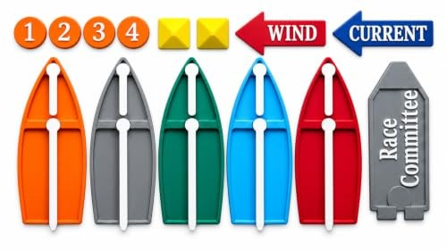

<title>SailIQ Wind Newport</title>
<meta name="claude:viewport-fit-sides" content="cover">
<link rel="preconnect" href="https://fonts.googleapis.com">
<link rel="preconnect" href="https://fonts.gstatic.com" crossorigin>
<link rel="stylesheet" href="https://fonts.googleapis.com/css2?family=Barlow:wght@400;500;600&family=Barlow+Condensed:wght@500;600;700&family=Cinzel:wght@600;700&display=swap">
<style>
/*LEAFLET_CSS*/
</style>
<style>
/* Layout: instrument-panel sidebar on the left, chart of the bay on the right; stacks on phones. */
:root {
  --page: #f4f6f7; --surface: #fcfdfd; --ink: #0e1a22; --ink-2: #4a5a64; --muted: #7d8b93;
  --grid: #dde3e6; --axis: #b9c3c8; --border: rgba(14, 26, 34, 0.10);
  --accent: #1f6fc4; --accent-ink: #ffffff;
  --water: #d7e6ef; --land: #eef0ec; --shore: #a9b8bf;
  --left: #6250d6; --right: #eb6834; --neutral: #8a9399;
  --lift: #2a78d6; --header: #e34948; --flood: #1baf7a; --ebb: #c98500;
  --band1: rgba(42, 120, 214, 0.12); --band2: rgba(42, 120, 214, 0.26);
  --warn-bg: #fff4dc; --warn-ink: #6b4a00;
  --f-body: "Barlow", system-ui, -apple-system, "Segoe UI", sans-serif;
  --f-display: "Barlow Condensed", "Arial Narrow", system-ui, sans-serif;
}
@media (prefers-color-scheme: dark) {
  :root:not([data-theme="light"]) {
    color-scheme: dark;
    --page: #0b1217; --surface: #121c23; --ink: #e9eff2; --ink-2: #b6c3ca; --muted: #83929a;
    --grid: #22303a; --axis: #33434e; --border: rgba(255, 255, 255, 0.10);
    --accent: #4a96e8; --accent-ink: #06121c;
    --water: #0f2433; --land: #1f2a2f; --shore: #3b4d57;
    --left: #9085e9; --right: #d95926; --neutral: #7d878d; --lift: #3987e5; --header: #e66767; --flood: #199e70; --ebb: #d9a020;
    --band1: rgba(57, 135, 229, 0.16); --band2: rgba(57, 135, 229, 0.32);
    --warn-bg: #3a2e10; --warn-ink: #f5d48a;
  }
}
:root[data-theme="dark"] {
  color-scheme: dark;
  --page: #0b1217; --surface: #121c23; --ink: #e9eff2; --ink-2: #b6c3ca; --muted: #83929a;
  --grid: #22303a; --axis: #33434e; --border: rgba(255, 255, 255, 0.10);
  --accent: #4a96e8; --accent-ink: #06121c;
  --water: #0f2433; --land: #1f2a2f; --shore: #3b4d57;
  --left: #9085e9; --right: #d95926; --neutral: #7d878d; --lift: #3987e5; --header: #e66767; --flood: #199e70; --ebb: #d9a020;
  --band1: rgba(57, 135, 229, 0.16); --band2: rgba(57, 135, 229, 0.32);
  --warn-bg: #3a2e10; --warn-ink: #f5d48a;
}
* { box-sizing: border-box; }
[hidden] { display: none !important; }
html, body { height: 100%; }
body { background: var(--page); color: var(--ink); font: 15px/1.5 var(--f-body); }
body::before { content: ""; position: fixed; inset: 0 0 auto; height: env(safe-area-inset-top, 0px); z-index: 1100; background: var(--surface); }

.top {
  position: sticky; top: env(safe-area-inset-top, 0px); z-index: 1000;
  display: flex; align-items: center; gap: 12px 20px; flex-wrap: wrap;
  padding-block: 10px; padding-left: max(16px, env(safe-area-inset-left, 0px)); padding-right: max(16px, env(safe-area-inset-right, 0px));
  background: var(--surface); border-bottom: 1px solid var(--border);
}
.brand { display: flex; align-items: center; gap: 8px; color: var(--accent); }
.brand { gap: 10px; }
.brand .logo { width: 40px; height: 40px; border-radius: 9px; flex: none; display: block; }
.brand-text { display: grid; gap: 3px; }
.brand .name { font: 700 19px/1 "Cinzel", Georgia, "Times New Roman", serif; letter-spacing: .06em; text-transform: uppercase; color: var(--ink); }
.brand .venue { font: 600 12px/1 var(--f-body); color: var(--muted); letter-spacing: .1em; text-transform: uppercase; }
.tabs { display: flex; gap: 4px; margin-left: auto; flex-wrap: wrap; }
.tabs a, .seg button {
  font: 500 14px/1 var(--f-body); color: var(--ink-2); text-decoration: none; padding: 8px 12px; border-radius: 8px;
  border: 0; background: none; cursor: pointer;
}
.tabs a:hover, .seg button:hover { background: var(--grid); }
.tabs a.active, .seg button.active { background: var(--accent); color: var(--accent-ink); }
.tabs a:focus-visible, button:focus-visible, input:focus-visible, select:focus-visible { outline: 2px solid var(--accent); outline-offset: 2px; }

main { display: grid; grid-template-columns: minmax(0, 46%) minmax(0, 1fr); height: calc(100% - 57px); }
.panel { overflow-y: auto; min-width: 0; padding-block: 20px 40px; padding-left: max(16px, env(safe-area-inset-left, 0px)); padding-right: 24px; border-right: 1px solid var(--border); }
.mapwrap { position: relative; min-width: 0; }
#map { position: absolute; inset: 0; background: var(--water); }

h1 { font: 600 28px/1.1 var(--f-display); letter-spacing: .01em; margin: 0 0 6px; text-wrap: balance; }
h2 { font: 600 18px/1.2 var(--f-display); letter-spacing: .02em; margin: 30px 0 6px; text-wrap: balance; }
.lede { color: var(--ink-2); margin: 0 0 16px; max-width: 62ch; }
.hint, .caveat { color: var(--muted); font-size: 13px; margin: 0 0 8px; max-width: 70ch; }

.form { display: grid; gap: 12px; background: var(--surface); border: 1px solid var(--border); border-radius: 12px; padding: 16px; }
.form fieldset { border: 0; padding: 0; margin: 0; min-width: 0; }
.form legend, .form label { color: var(--ink-2); font-size: 13px; }
.form label { display: grid; gap: 4px; }
.row { display: grid; grid-template-columns: 1fr 1fr; gap: 12px; }
input, select { font: inherit; color: var(--ink); background: var(--page); border: 1px solid var(--axis); border-radius: 8px; padding: 7px 9px; min-width: 0; width: 100%; }
input[type=range] { padding: 0; }
input[type=file] { padding: 6px; }
details summary { cursor: pointer; color: var(--ink-2); font-size: 13px; }
details[open] summary { margin-bottom: 8px; }
button { font: 500 14px/1 var(--f-body); border-radius: 8px; padding: 10px 14px; cursor: pointer; border: 1px solid var(--axis); background: var(--surface); color: var(--ink); }
button.primary { background: var(--accent); color: var(--accent-ink); border-color: var(--accent); font-weight: 600; }
.inline { display: inline-flex; align-items: center; gap: 8px; color: var(--ink-2); margin-bottom: 6px; }
.inline select { width: auto; }

.chips { display: flex; flex-wrap: wrap; gap: 6px; margin-top: 4px; }
.chips label { display: inline-flex; align-items: center; border: 1px solid var(--axis); border-radius: 999px; padding: 4px 12px; cursor: pointer; color: var(--ink); font-size: 14px; }
.chips input { position: absolute; opacity: 0; width: 1px; height: 1px; }
.chips label:has(input:checked) { background: var(--accent); border-color: var(--accent); color: var(--accent-ink); }
.chips label:has(input:focus-visible) { outline: 2px solid var(--accent); outline-offset: 2px; }

.tiles { display: grid; grid-template-columns: repeat(auto-fit, minmax(130px, 1fr)); gap: 10px; margin: 18px 0 10px; }
.tile { background: var(--surface); border: 1px solid var(--border); border-radius: 12px; padding: 12px 14px; min-width: 0; }
.tile .k { color: var(--muted); font-size: 12px; letter-spacing: .06em; text-transform: uppercase; }
.tile .v { font: 600 28px/1.15 var(--f-display); margin-top: 4px; }
.tile .s { color: var(--ink-2); font-size: 13px; }
.tile.hero { grid-column: 1 / -1; border-color: var(--accent); }
.tile.hero .v { font-size: 34px; }

.split { display: flex; height: 26px; border-radius: 6px; overflow: hidden; gap: 2px; margin: 4px 0 6px; }
.split div { display: flex; align-items: center; justify-content: center; color: #fff; font-size: 12px; font-weight: 600; min-width: 0; white-space: nowrap; overflow: hidden; }
.split .l { background: var(--left); } .split .o { background: var(--neutral); } .split .r { background: var(--right); }
.split-legend { display: flex; gap: 6px 14px; color: var(--ink-2); font-size: 13px; flex-wrap: wrap; }
.swatch { display: inline-block; width: 10px; height: 10px; border-radius: 2px; margin-right: 5px; vertical-align: -1px; }
.advice { padding-left: 18px; margin: 12px 0; max-width: 68ch; }
.advice li { margin-bottom: 6px; }

.chart { position: relative; height: 260px; background: var(--surface); border: 1px solid var(--border); border-radius: 12px; padding: 10px; }
.chart.small { height: 180px; margin-bottom: 10px; }
.slider-label { color: var(--ink-2); font-size: 13px; font-variant-numeric: tabular-nums; }

.table-wrap { max-height: 300px; overflow: auto; border: 1px solid var(--border); border-radius: 12px; background: var(--surface); }
table { border-collapse: collapse; width: 100%; font-variant-numeric: tabular-nums; }
th, td { text-align: left; padding: 7px 10px; border-bottom: 1px solid var(--grid); white-space: nowrap; }
th { position: sticky; top: 0; background: var(--surface); color: var(--muted); font-weight: 500; font-size: 12px; letter-spacing: .05em; text-transform: uppercase; }
tbody tr.click { cursor: pointer; }
tbody tr.click:hover { background: var(--grid); }
tbody tr.sel { outline: 2px solid var(--accent); outline-offset: -2px; }
.metrics td:last-child, .metrics th:last-child { text-align: right; }
.count { color: var(--muted); font-weight: 400; }

.note { border-radius: 10px; padding: 10px 12px; margin: 12px 0; font-size: 14px; background: var(--warn-bg); color: var(--warn-ink); }
.note.info { background: var(--surface); color: var(--ink-2); border: 1px solid var(--border); }

.list { display: grid; gap: 6px; margin-top: 10px; }
.item { display: flex; align-items: center; gap: 10px; background: var(--surface); border: 1px solid var(--border); border-radius: 10px; padding: 8px 12px; cursor: pointer; text-align: left; width: 100%; font: inherit; color: inherit; }
.item:hover { border-color: var(--accent); }
.item.sel { border-color: var(--accent); box-shadow: inset 3px 0 0 var(--accent); }
.item .meta { color: var(--muted); font-size: 12.5px; }
.item .tag { margin-left: auto; font-size: 11px; letter-spacing: .06em; text-transform: uppercase; color: var(--muted); border: 1px solid var(--axis); border-radius: 999px; padding: 2px 8px; }
.seg { display: inline-flex; gap: 4px; background: var(--surface); border: 1px solid var(--border); border-radius: 10px; padding: 3px; margin-top: 12px; flex-wrap: wrap; }

.legend { position: absolute; left: calc(12px + env(safe-area-inset-left, 0px)); bottom: calc(24px + env(safe-area-inset-bottom, 0px)); z-index: 500; background: var(--surface); color: var(--ink);
  border: 1px solid var(--border); border-radius: 10px; padding: 8px 10px; font-size: 12.5px; max-width: 270px; }
.legend .bar { height: 8px; border-radius: 4px; margin: 4px 0 2px; }
.legend .ends { display: flex; justify-content: space-between; gap: 8px; color: var(--ink-2); }
.legend .fine { color: var(--muted); margin-top: 4px; }
.probe { position: absolute; z-index: 700; pointer-events: none; background: var(--surface); color: var(--ink); border: 1px solid var(--border);
  border-radius: 10px; padding: 8px 10px; font-size: 13px; line-height: 1.45; box-shadow: 0 4px 16px rgba(0,0,0,.18); width: 250px; }
.probe .pt { font-weight: 600; margin-bottom: 2px; }
.probe .pr { display: flex; gap: 8px; }
.probe .pk { color: var(--muted); width: 72px; flex: none; }
.probe .lift { color: var(--lift); font-weight: 600; } .probe .head { color: var(--header); font-weight: 600; }
.probe .flood { color: var(--flood); font-weight: 600; } .probe .ebb { color: var(--ebb); font-weight: 600; }
.probe .pf { color: var(--muted); font-size: 11.5px; margin-top: 4px; }
.maptools { position: absolute; right: calc(12px + env(safe-area-inset-right, 0px)); top: 12px; z-index: 500; display: grid; justify-items: end; gap: 6px; }
.maptools .seg { margin-top: 0; box-shadow: 0 1px 4px rgba(0,0,0,.15); }
.maptools .seg button { padding: 6px 10px; font-size: 13px; }
.wind-canvas { pointer-events: none; position: absolute; left: 0; top: 0; }
.search { position: relative; flex: 1 1 220px; max-width: 360px; min-width: 0; }
.search input { width: 100%; padding: 8px 12px; border-radius: 999px; }
.search-results { position: absolute; left: 0; right: 0; top: calc(100% + 4px); z-index: 1200; background: var(--surface); border: 1px solid var(--border);
  border-radius: 12px; box-shadow: 0 6px 24px rgba(0,0,0,.18); padding: 4px; display: grid; }
.sr { display: flex; justify-content: space-between; gap: 10px; text-align: left; border: 0; background: none; padding: 8px 10px; border-radius: 8px; font-size: 14px; color: var(--ink); }
.sr:hover, .sr.sel { background: var(--grid); }
.sr span:first-child { min-width: 0; overflow: hidden; text-overflow: ellipsis; white-space: nowrap; }
.sr-k { color: var(--muted); font-size: 12px; white-space: nowrap; }
.sr-empty { padding: 8px 10px; color: var(--muted); font-size: 13px; }
main.wide { grid-template-columns: minmax(0, 1fr); }
main.wide .mapwrap { display: none; }
main.wide .panel { border-right: 0; }
#tab-kits { max-width: 1100px; margin: 0 auto; }
.kits-hero { display: flex; gap: 16px; align-items: center; margin-bottom: 8px; }
.kits-hero img { border-radius: 14px; flex: none; }
.kits-hero h1 { font-family: "Cinzel", Georgia, serif; letter-spacing: .04em; }
.kit-grid { display: grid; grid-template-columns: repeat(auto-fill, minmax(220px, 1fr)); gap: 16px; margin: 16px 0 8px; }
.kit-grid:empty { display: none; }
.kit { display: grid; grid-template-rows: auto 1fr; background: var(--surface); border: 1px solid var(--border); border-radius: 14px; overflow: hidden; color: inherit; text-decoration: none; }
.kit:hover { border-color: var(--accent); }
.kit img { width: 100%; aspect-ratio: 1 / 1; object-fit: cover; display: block; background: var(--grid); }
.kit-body { padding: 12px 14px; display: grid; gap: 4px; align-content: start; }
.kit-name { font-weight: 600; }
.kit-price { font: 600 20px/1.1 var(--f-display); }
.kit-store { color: var(--accent); font-weight: 600; font-size: 13px; }
.store-grid { display: grid; grid-template-columns: repeat(auto-fit, minmax(240px, 1fr)); gap: 12px; }
.store { display: grid; gap: 4px; padding: 18px; border-radius: 14px; border: 1px solid var(--border); background: var(--surface); color: inherit; text-decoration: none; }
.store:hover { border-color: var(--accent); }
.store-name { font: 600 24px/1.1 var(--f-display); }
.store-sub { color: var(--ink-2); }
.store-go { color: var(--accent); font-weight: 600; margin-top: 6px; }
.kit-feature { display: grid; grid-template-columns: minmax(0, 1.1fr) minmax(0, 1fr); gap: 24px; align-items: center; margin-top: 24px;
  background: var(--surface); border: 1px solid var(--border); border-radius: 16px; padding: 20px; }
.kit-feature img { width: 100%; height: auto; border-radius: 12px; display: block; background: #fff; }
.kit-copy h2 { margin-top: 0; font-family: "Cinzel", Georgia, serif; font-size: 24px; letter-spacing: .03em; }
.kit-copy p { margin: 0 0 10px; max-width: 62ch; color: var(--ink-2); }
.kit-copy .kit-tag { color: var(--ink); font-weight: 600; font-size: 17px; }
.kit-buttons { display: flex; flex-wrap: wrap; gap: 10px; margin-top: 6px; }
.kit-btn { background: var(--accent); color: var(--accent-ink); text-decoration: none; font-weight: 600; padding: 10px 16px; border-radius: 999px; }
.kit-btn:hover { filter: brightness(1.08); }
@media (max-width: 760px) { .kit-feature { grid-template-columns: minmax(0, 1fr); padding: 14px; } }
.check { display: flex !important; align-items: center; gap: 8px; }
.check input { width: auto; }
.dialrow { display: flex; gap: 16px; align-items: center; flex-wrap: wrap; }
.dialrow .dialcontrols { display: grid; gap: 10px; flex: 1 1 180px; min-width: 0; }
#wind-dial { cursor: grab; touch-action: none; flex: none; }
#field-readout, #tide-readout { margin-top: 6px; color: var(--ink); font-variant-numeric: tabular-nums; min-height: 1.4em; }
.maptools button { background: var(--surface); box-shadow: 0 1px 4px rgba(0,0,0,.15); }
.station-icon { background: none; border: 0; }
.station-icon .lab { position: absolute; left: 30px; top: 4px; white-space: nowrap; background: var(--surface); color: var(--ink);
  border: 1px solid var(--border); border-radius: 6px; padding: 1px 6px; font: 600 12.5px/1.4 var(--f-body); font-variant-numeric: tabular-nums; }
.leaflet-container { font: inherit; background: var(--water); }
.leaflet-tooltip { font: 13px/1.4 var(--f-body); }
.leaflet-control-attribution { font-size: 11px; }

.rules { margin-top: 36px; padding-top: 12px; border-top: 1px solid var(--grid); color: var(--muted); font-size: 12.5px; max-width: 75ch; }

@media (max-width: 900px) {
  main { grid-template-columns: minmax(0, 1fr); height: auto; }
  .panel { border-right: 0; padding-right: max(16px, env(safe-area-inset-right, 0px)); }
  .mapwrap { height: 55vh; order: -1; }
  .tabs { margin-left: 0; }
  .row { grid-template-columns: 1fr; }
  .legend { max-width: 210px; font-size: 11.5px; padding: 6px 8px; left: calc(8px + env(safe-area-inset-left, 0px)); bottom: calc(18px + env(safe-area-inset-bottom, 0px)); }
  .legend .fine, #field-readout, #tide-readout { display: none; }
}
@media (prefers-reduced-motion: reduce) { * { scroll-behavior: auto !important; transition: none !important; } }
</style>

<header class="top">
  <div class="brand">
    
    <span class="brand-text"><span class="name">NJP Boatworks</span><span class="venue" id="brand-venue">Lift / Header / Tide Guide</span></span>
  </div>
  <div class="search" role="search">
    <input type="search" id="place-search" placeholder="Search a town, harbor or station" aria-label="Search places" autocomplete="off">
    <div class="search-results" id="search-results" role="listbox" hidden></div>
  </div>
  <nav class="tabs" aria-label="Sections">
    <a href="#coast" data-tab="coast" class="active">Coast Map</a>
    <a href="#debrief" data-tab="debrief">Coach Debrief</a>
    <a href="#accuracy" data-tab="accuracy">Model Accuracy</a>
    <a href="#kits" data-tab="kits">Coach Kits</a>
  </nav>
</header>

<main>
  <section class="panel">
    <div id="loading" class="note info">Loading six years of Newport wind history…</div>

    <!-- PLANNER -->
    <div class="tab" id="tab-planner" hidden>
      <h1>Pre-race planner</h1>
      <p class="lede">Enter the forecast for race start. The planner finds past race-season days at Newport that started the same way and shows what the wind actually did next.</p>
      <form id="plan-form" class="form">
        <fieldset>
          <legend>Months (racing season)</legend>
          <div class="chips" id="months"></div>
        </fieldset>
        <div class="row">
          <label for="start">Start time
            <select id="start"></select>
          </label>
          <label for="duration">Race length
            <select id="duration">
              <option value="1">1 h</option><option value="1.5">1.5 h</option><option value="2">2 h</option>
              <option value="2.5" selected>2.5 h</option><option value="3">3 h</option><option value="4">4 h</option>
            </select>
          </label>
        </div>
        <div class="row">
          <label for="dir">Wind from (degrees true)<input type="number" id="dir" value="210" min="0" max="359" required></label>
          <label for="spd">Wind speed (knots)<input type="number" id="spd" value="12" min="0" max="40" required></label>
        </div>
        <details>
          <summary>Matching tolerance</summary>
          <div class="row">
            <label for="dirtol">Direction ± (degrees)<input type="number" id="dirtol" value="25" min="5" max="90"></label>
            <label for="spdtol">Speed ± (knots)<input type="number" id="spdtol" value="4" min="1" max="15"></label>
          </div>
        </details>
        <button class="primary" type="submit">Analyze history</button>
        <div id="plan-msg" class="note" hidden></div>
      </form>

      <div id="plan-out" hidden>
        <div class="tiles" id="plan-tiles"></div>
        <div class="split" id="plan-split" role="img" aria-label="Share of similar days by outcome"></div>
        <div class="split-legend" id="split-legend"></div>
        <ul class="advice" id="plan-advice"></ul>

        <h2>How the wind moved on similar days</h2>
        <p class="hint">Degrees from the start direction at Newport harbor. Above zero means the wind went right (veered); below zero means it went left (backed). Bands show the middle 50% and 80% of days. Tap a day in the table to overlay it.</p>
        <div class="chart"><canvas id="env-chart"></canvas></div>
        <h2>Wind speed on similar days</h2>
        <div class="chart small"><canvas id="spd-chart"></canvas></div>

        <h2>Station wind over the race</h2>
        <p class="hint">Drag to move through the race. The big arrows are the 4 stations; the moving dashes estimate the wind over the water. They drift the way the wind blows, faster where it is stronger, and are blue where you would be lifted and red where you would be headed on the tack chosen on the map.</p>
        <input type="range" id="time-slider" min="0" max="0" value="0" aria-label="Time during race">
        <div class="slider-label" id="time-label"></div>

        <h2>Matching days <span class="count" id="days-count"></span></h2>
        <div class="table-wrap"><table id="days-table"><thead><tr><th>Date</th><th>Start</th><th>Shift at end</th><th>Osc ±</th><th>Speed end</th></tr></thead><tbody></tbody></table></div>
      </div>

      <h2>Typical day by hour</h2>
      <p class="hint">Median wind at Newport harbor for the chosen month, all days with at least 3 knots.</p>
      <label class="inline" for="clim-month">Month <select id="clim-month"></select></label>
      <div class="chart small"><canvas id="clim-dir"></canvas></div>
      <div class="chart small"><canvas id="clim-spd"></canvas></div>
    </div>

    <!-- DEBRIEF -->
    <div class="tab" id="tab-debrief" hidden>
      <h1>Coach debrief</h1>
      <p class="lede">Upload a GPX track from any GPS watch or phone app. The wind is worked out from the boat's tacking headings, every upwind moment is colored lifted or headed, and each tack is checked against the shifts.</p>
      <form id="upload-form" class="form">
        <label for="gpx">GPX file<input type="file" id="gpx" accept=".gpx,application/gpx+xml" required></label>
        <label for="gpx-name">Name (boat, sailor or race)<input type="text" id="gpx-name" placeholder="J/70 USA 123, Race 2"></label>
        <details>
          <summary>Known wind direction (optional)</summary>
          <label for="twd-hint">Wind from (degrees)<input type="number" id="twd-hint" min="0" max="359" placeholder="Detect from track"></label>
        </details>
        <button class="primary" type="submit">Analyze track</button>
        <div id="upload-msg" class="note" hidden></div>
      </form>
      <p class="hint" style="margin-top:10px">Tracks are analyzed in your browser and are not uploaded anywhere. Your tracks are kept on this device only.</p>
      <h2>Tracks</h2>
      <div class="list" id="track-list"></div>

      <div id="debrief-out" hidden>
        <h2 id="debrief-title"></h2>
        <div class="tiles" id="debrief-tiles"></div>
        <ul class="advice" id="debrief-insights"></ul>
        <div class="seg" id="color-seg" role="group" aria-label="Track color">
          <button class="active" data-color="lift" type="button">Lifted / headed</button>
          <button data-color="shift" type="button">Wind shift</button>
        </div>
        <h2>Wind direction during the race</h2>
        <p class="hint">Worked out from the GPS track (upwind legs only), compared with the NOAA station at Newport harbor when that day is in the dataset.</p>
        <div class="chart"><canvas id="twd-chart"></canvas></div>
        <p class="caveat">GPS records course over ground, not compass heading, so tidal current and leeway mix into the inferred wind. Steering changes also show up as small shifts. Read the pattern, not single readings.</p>
      </div>
    </div>

    <!-- EAST COAST -->
    <div class="tab" id="tab-coast" hidden>
      <div class="seg" id="region-tools" role="group" aria-label="Region" style="margin:0 0 10px">
        <button type="button" data-region="us" class="active">US East &amp; Gulf</button>
        <button type="button" data-region="iberia">Spain &amp; Portugal</button>
      </div>
      <div class="seg" id="coast-mode" role="group" aria-label="What the map shows">
        <button type="button" data-mode="typical" class="active">Typical wind</button>
        <button type="button" data-mode="custom">Set the wind direction</button>
        <button type="button" data-mode="live">Live &amp; forecast</button>
      </div>
      <div class="form" id="typical-controls" style="margin-top:10px">
        <label for="coast-month">Month<select id="coast-month"></select></label>
        <label for="coast-hour">Time of day: <b id="coast-hour-label"></b><input type="range" id="coast-hour" min="0" max="23" value="14"></label>
        <button type="button" id="coast-play" class="primary">Play the day</button>
      </div>
      <div class="form" id="custom-controls" style="margin-top:10px" hidden>
        <div class="dialrow">
          <svg id="wind-dial" viewBox="0 0 120 120" width="120" height="120" role="slider" tabindex="0" aria-label="Wind direction" aria-valuemin="0" aria-valuemax="355">
            <circle cx="60" cy="60" r="54" fill="var(--page)" stroke="var(--axis)" stroke-width="1.5"/>
            <g font-size="11" font-weight="600" fill="var(--ink-2)" text-anchor="middle"><text x="60" y="17">N</text><text x="107" y="64">E</text><text x="60" y="111">S</text><text x="13" y="64">W</text></g>
            <g id="dial-arrow"><line x1="60" y1="26" x2="60" y2="92" stroke="var(--accent)" stroke-width="4" stroke-linecap="round"/><path d="M60 98 L51 82 L69 82 Z" fill="var(--accent)"/></g>
          </svg>
          <div class="dialcontrols">
            <label for="wd">Breeze from <b id="wd-label"></b><input type="range" id="wd" min="0" max="355" step="5" value="200"></label>
            <label for="ws">Breeze speed <b id="ws-label"></b><input type="range" id="ws" min="6" max="25" step="1" value="12"></label>
          </div>
        </div>
        <p class="hint" style="margin:0">Drag the dial or the slider. The map shows how each spot usually bends and slows a breeze from that direction, measured at <span id="effects-n">129</span> NOAA stations in racing-season daytime hours. Blue is lifted and red is headed compared with the direction you set.</p>
      </div>
      <div class="form" id="live-controls" style="margin-top:10px" hidden>
        <div class="row">
          <label for="live-day">Date<select id="live-day"></select></label>
          <div style="display:grid;align-items:end"><button type="button" id="live-now">Now</button></div>
        </div>
        <label for="live-hour">Time: <b id="live-hour-label"></b><input type="range" id="live-hour" min="0" max="23" value="12"></label>
        <label class="check" for="show-currents" id="show-currents-row"><input type="checkbox" id="show-currents" checked> Show tides and currents on the map</label>
        <p class="hint" id="live-source" style="margin:0"></p>
      </div>
      <div id="tide-panel" hidden>
        <h2>Tide and current <span class="count" id="tide-where"></span></h2>
        <div class="tiles" id="tide-tiles"></div>
        <div class="chart small"><canvas id="tide-chart"></canvas></div>
        <div class="chart small" id="current-chart-box"><canvas id="current-chart"></canvas></div>
        <p class="hint"><span id="tide-note">NOAA predictions for the tide and current stations nearest the map center.</span> Curves are drawn smoothly between the predicted highs and lows (and slack and maximum-current times), so values between them are approximate.</p>
      </div>
      <h2>Jump to a venue</h2>
      <div class="chips" id="coast-venues"></div>
      <h2>Stations near the map center</h2>
      <p class="hint" id="near-hint">Typical wind at this month and hour. Steadiness shows how often the wind really comes from that direction: near 100% it almost always does; below about 50% it varies a lot from day to day.</p>
      <div class="table-wrap"><table id="coast-near"><thead><tr><th>Station</th><th>Away</th><th>From</th><th>Speed</th><th id="near-last">Steadiness</th></tr></thead><tbody></tbody></table></div>
      <ul class="advice">
        <li>"Typical" means the average for that month and hour over six years. On any single day the wind can be very different, so use this for planning, not as a forecast.</li>
        <li>Blue and red compare each spot with the regional wind within about 40 km, on the tack chosen on the map. They show where the wind usually bends, not where it will bend on race day.</li>
        <li>Between stations the wind is estimated, and stations can be 20 to 100 miles apart. Detail is best where stations are dense, such as Chesapeake Bay, Long Island Sound and Narragansett Bay.</li>
      </ul>
      <div id="coast-msg" class="note" hidden></div>
    </div>

    <!-- COACH KITS -->
    <div class="tab" id="tab-kits" hidden>
      <div class="kits-hero">
        
        <div>
          <h1>Coach Kits</h1>
          <p class="lede">Coach kits from NJP Boatworks, available on Etsy and Amazon.</p>
        </div>
      </div>
      <div class="kit-grid" id="kit-grid"></div>
      <h2>Where to buy</h2>
      <div class="store-grid">
        <a class="store" href="https://www.etsy.com/shop/NJPboatworks" target="_blank" rel="noopener">
          <span class="store-name">Etsy</span>
          <span class="store-sub">NJP Boatworks shop: see every kit</span>
          <span class="store-go">Visit the Etsy shop →</span>
        </a>
        <a class="store" href="https://www.amazon.com/dp/B0FJKP17SW" target="_blank" rel="noopener">
          <span class="store-name">Amazon</span>
          <span class="store-sub">Coach kit listing</span>
          <span class="store-go">Buy on Amazon →</span>
        </a>
      </div>
      <section class="kit-feature">
        
        <div class="kit-copy">
          <h2>Sailing Coaching Kits</h2>
          <p class="kit-tag">Made by sailors, used by sailors.</p>
          <p>Easily moved around on a whiteboard as opposed to the competition that are magnetic sheets. Much better for showing how boats are navigating on the course.</p>
          <p>Set sail for success with the Sailing Coaching Kit, the ultimate training companion for sailors of all skill levels! Whether you're navigating your first regatta or fine-tuning advanced techniques, this high-quality, made-in-the-USA kit is designed to enhance your sailing journey.</p>
          <div class="kit-buttons">
            <a class="kit-btn" href="https://www.etsy.com/shop/NJPboatworks" target="_blank" rel="noopener">Buy on Etsy</a>
            <a class="kit-btn" href="https://www.amazon.com/dp/B0FJKP17SW" target="_blank" rel="noopener">Buy on Amazon</a>
          </div>
        </div>
      </section>
    </div>

    <!-- ACCURACY -->
    <div class="tab" id="tab-accuracy" hidden>
      <h1>How accurate is the AI?</h1>
      <p class="lede">The shift forecaster was tested on a full season it never saw during training, and compared with simple rules of thumb.</p>
      <div id="model-out"></div>
    </div>

    <footer class="rules">
      Built for pre-race planning and post-race debriefs. Racing Rules of Sailing rule 41 (Outside Help), class rules and sailing instructions may limit electronic information during a race, so check them before using this on the water. Not for navigation.<br>
      Data: NOAA (NDBC buoys, CO-OPS tides and currents), National Weather Service and MET Norway forecasts (MET Norway data CC BY 4.0), Iowa Environmental Mesonet airport readings, IOC Sea Level Station Monitoring Facility tide gauges, US Census and GeoNames place names (CC BY 4.0). Coastline: © OpenStreetMap contributors (ODbL) and GSHHG.
    </footer>
  </section>

  <section class="mapwrap">
    <div id="map" role="region" aria-label="Map of Newport and Narragansett Bay"></div>
    <div class="legend" id="map-legend" hidden></div>
    <div class="probe" id="probe" hidden></div>
    <div class="maptools">
      <button id="liftmap-btn" type="button">Show venue lift map</button>
      <div class="seg" id="basemap-tools" role="group" aria-label="Base map" hidden>
      </div>
      <div class="seg" id="arrow-tools" role="group" aria-label="Color wind arrows for tack">
        <button type="button" data-tack="stbd" class="active">Starboard tack</button>
        <button type="button" data-tack="port">Port tack</button>
        <button type="button" data-tack="off">Hide wind</button>
      </div>
      <div class="seg" id="tide-tools" role="group" aria-label="Tides on the map">
        <button type="button" id="tide-toggle" class="active" aria-pressed="true">Tides on</button>
      </div>
    </div>
  </section>
</main>

<script src="https://cdn.jsdelivr.net/npm/leaflet@1.9.4/dist/leaflet.js"></script>
<script src="https://cdn.jsdelivr.net/npm/chart.js@4.4.1/dist/chart.umd.js"></script>
<script src="config.js"></script>
<script>
"use strict";
/* =================== helpers =================== */
const MONTHS = ["Jan","Feb","Mar","Apr","May","Jun","Jul","Aug","Sep","Oct","Nov","Dec"];
const $ = (s) => document.querySelector(s);
const css = (n) => getComputedStyle(document.documentElement).getPropertyValue(n).trim();
const esc = (s) => String(s).replace(/[&<>"']/g, (c) => ({ "&": "&amp;", "<": "&lt;", ">": "&gt;", '"': "&quot;", "'": "&#39;" }[c]));
const fmtSigned = (x, unit = "°") => (x == null || Number.isNaN(x) ? "–" : (x > 0 ? "+" : x < 0 ? "−" : "") + Math.abs(x) + unit);
const r1 = (x) => Math.round(x * 10) / 10;
const wrap180 = (a) => ((((a + 180) % 360) + 360) % 360) - 180;
const deg = (r) => (r * 180) / Math.PI, rad = (d) => (d * Math.PI) / 180;
function circMean(arr) { let s = 0, c = 0, n = 0; for (const d of arr) if (d != null && !Number.isNaN(d)) { s += Math.sin(rad(d)); c += Math.cos(rad(d)); n++; } return n ? (deg(Math.atan2(s, c)) + 360) % 360 : NaN; }
function pctl(vals, q) { const v = vals.filter((x) => x != null && !Number.isNaN(x)).sort((a, b) => a - b); if (!v.length) return NaN; const i = ((v.length - 1) * q) / 100, lo = Math.floor(i), hi = Math.ceil(i); return v[lo] + (v[hi] - v[lo]) * (i - lo); }
const median = (v) => pctl(v, 50);
const nanmean = (v) => { let s = 0, n = 0; for (const x of v) if (x != null && !Number.isNaN(x)) { s += x; n++; } return n ? s / n : NaN; };
const nn = (x, d = 1) => (x == null || Number.isNaN(x) ? null : Math.round(x * 10 ** d) / 10 ** d);
function linfit(x, y) { const n = x.length; let sx = 0, sy = 0, sxx = 0, sxy = 0; for (let i = 0; i < n; i++) { sx += x[i]; sy += y[i]; sxx += x[i] * x[i]; sxy += x[i] * y[i]; } const b = (n * sxy - sx * sy) / (n * sxx - sx * sx); return [b, (sy - b * sx) / n]; }
function store(key, val) { try { if (val === undefined) return JSON.parse(localStorage.getItem(key) || "null"); localStorage.setItem(key, JSON.stringify(val)); } catch (_) { return null; } }
function showMsg(el, text) { el.textContent = text; el.hidden = !text; }

let D, GRID, ST = {}, map, layers = {}, charts = {}, planResult = null, selectedDay = null;
let currentTrack = null, colorMode = "lift", userTracks = [];

function unpack(b64) { const bin = atob(b64), u8 = new Uint8Array(bin.length); for (let i = 0; i < bin.length; i++) u8[i] = bin.charCodeAt(i); return new Uint16Array(u8.buffer); }

/* =================== planner (port of backend/analysis.py) =================== */
function plan({ months, startMin, durationH, direction, speed, dirTol, spdTol }) {
  const T = GRID.steps, prim = ST[D.venue.primary];
  const ts = (startMin - GRID.day_start_min) / 10, n = Math.round(durationH * 6) + 1;
  if (ts + n - 1 > T - 1) return { error: "The race window must finish by 19:50. Pick an earlier start or a shorter race." };
  const times = Array.from({ length: n }, (_, i) => i * 10);
  let candidates = 0; const picks = [];
  GRID.dates.forEach((date, d) => {
    if (!months.includes(+date.slice(5, 7))) return;
    candidates++;
    let u = 0, v = 0, sp = 0, k = 0;
    for (let t = ts - 2; t <= ts; t++) { const dir = prim.dir[d * T + t], s = prim.spd[d * T + t]; if (dir == null || s == null) continue; u += Math.sin(rad(dir)) * s; v += Math.cos(rad(dir)) * s; sp += s; k++; }
    if (k < 2) return;
    const sd = (deg(Math.atan2(u, v)) + 360) % 360, ss = sp / k;
    if (Math.abs(wrap180(sd - direction)) > dirTol || Math.abs(ss - speed) > spdTol) return;
    const dirs = [], spds = []; let miss = 0;
    for (let i = 0; i < n; i++) { const x = prim.dir[d * T + ts + i]; dirs.push(x); spds.push(prim.spd[d * T + ts + i]); if (x == null) miss++; }
    if (miss / n >= 0.2) return;
    picks.push({ d, date, ref: sd, dirs, spds });
  });
  const res = { query: { months, startMin, durationH, direction, speed }, candidates, n_analogs: picks.length, times };
  if (!picks.length) return res;
  const tH = times.map((m) => m / 60);
  const deltas = picks.map((p) => p.dirs.map((x) => (x == null ? null : wrap180(x - p.ref))));
  const endShift = [], slopes = [], oscAmp = [], oscPer = [];
  deltas.forEach((row) => {
    endShift.push(nanmean(row.slice(-3)));
    const xs = [], ys = []; row.forEach((y, i) => { if (y != null) { xs.push(tH[i]); ys.push(y); } });
    if (xs.length < 4) { slopes.push(NaN); oscAmp.push(NaN); oscPer.push(NaN); return; }
    const [b, a] = linfit(xs, ys); slopes.push(b);
    const resid = ys.map((y, i) => y - (a + b * xs[i]));
    oscAmp.push((pctl(resid, 90) - pctl(resid, 10)) / 2);
    let cr = 0; for (let i = 1; i < resid.length; i++) if (Math.sign(resid[i]) * Math.sign(resid[i - 1]) < 0) cr++;
    oscPer.push(cr >= 2 ? (2 * (xs[xs.length - 1] - xs[0]) * 60) / cr : NaN);
  });
  const pct = (f) => r1((100 * endShift.filter(f).length) / endShift.length);
  const s = {
    right: pct((x) => x > 10), left: pct((x) => x < -10), osc: pct((x) => !(x > 10) && !(x < -10)),
    endShift: r1(median(endShift)), trend: r1(median(slopes)), oscAmp: nn(median(oscAmp)),
    oscPer: Number.isNaN(median(oscPer)) ? null : Math.round(median(oscPer)),
    spdChg: r1(median(picks.map((p) => nanmean(p.spds.slice(-3)) - p.spds[0]))),
  };
  const col = (rows, i) => rows.map((r) => r[i]);
  const env = {}; [10, 25, 50, 75, 90].forEach((q) => (env["p" + q] = times.map((_, i) => nn(pctl(col(deltas, i), q)))));
  ["25", "50", "75"].forEach((q) => (env["s" + q] = times.map((_, i) => nn(pctl(col(picks.map((p) => p.spds), i), +q)))));
  const stations = {};
  for (const [sid, st] of Object.entries(ST)) {
    const dir = [], spd = [];
    for (let i = 0; i < n; i++) {
      let u = 0, v = 0, k = 0; const sp = [];
      for (const p of picks) { const x = st.dir[p.d * T + ts + i], y = st.spd[p.d * T + ts + i]; if (x == null || y == null) continue; u += Math.sin(rad(x)) * y; v += Math.cos(rad(x)) * y; k++; sp.push(y); }
      const ok = k / picks.length >= 0.3;
      dir.push(ok ? Math.round((deg(Math.atan2(u, v)) + 360) % 360) : null); spd.push(ok ? nn(median(sp)) : null);
    }
    stations[sid] = { dir, spd };
  }
  const days = picks.map((p, i) => ({ date: p.date, startDir: Math.round(p.ref), startSpd: nn(p.spds[0]), endShift: nn(endShift[i]), endSpd: nn(nanmean(p.spds.slice(-3))), osc: nn(oscAmp[i]), trace: deltas[i].map((x) => nn(x)) }))
    .sort((a, b) => (a.date < b.date ? 1 : -1));
  return Object.assign(res, { summary: s, envelope: env, stations, days, advice: advice(s, picks.length) });
}

function advice(s, n) {
  const t = [];
  if (n < 8) t.push(`Only ${n} matching days were found, so treat these percentages as weak evidence. Widen the tolerance or add months.`);
  if (s.right >= 50 && s.right > s.left * 2) t.push(`On ${s.right}% of similar days the wind veered (clockwise) more than 10° over the race. History favors the RIGHT side of the beat (looking upwind), toward the new breeze.`);
  else if (s.left >= 50 && s.left > s.right * 2) t.push(`On ${s.left}% of similar days the wind backed (counter-clockwise) more than 10°. History favors the LEFT side of the beat (looking upwind).`);
  else t.push(`No strong persistent trend: ${s.right}% veered, ${s.left}% backed and ${s.osc}% stayed within ±10°. Play the middle and tack on the headers rather than banking on one side.`);
  if (Math.abs(s.trend) >= 4) t.push(`The typical trend is ${Math.abs(s.trend)}° per hour to the ${s.trend > 0 ? "right (veer)" : "left (back)"}, so later beats are likely to be more one-sided than the first.`);
  if (s.oscAmp != null) t.push(`Oscillations around the trend are typically ±${s.oscAmp}°${s.oscPer ? `, with a cycle of about ${s.oscPer} minutes` : ""}. These come from 10-minute averages at the harbor station, so shifts on the course will be larger and faster.`);
  if (s.spdChg >= 3) t.push(`The breeze typically builds by about ${s.spdChg} knots over the race, which fits a sea breeze filling in. Check sail choices for later races.`);
  else if (s.spdChg <= -3) t.push(`The breeze typically fades by about ${Math.abs(s.spdChg)} knots over the race.`);
  return t;
}

/* =================== debrief (port of backend/debrief.py) =================== */
function parseGpx(text) {
  const doc = new DOMParser().parseFromString(text, "application/xml");
  if (doc.getElementsByTagName("parsererror").length) throw new Error("This file is not valid GPX (XML could not be read).");
  const pts = [];
  for (const el of doc.getElementsByTagNameNS("*", "trkpt")) {
    const tEl = el.getElementsByTagNameNS("*", "time")[0];
    if (!tEl) continue;
    const t = Date.parse(tEl.textContent.trim());
    if (!Number.isNaN(t)) pts.push([t, +el.getAttribute("lat"), +el.getAttribute("lon")]);
  }
  if (pts.length < 20) throw new Error("The GPX file needs at least 20 track points with timestamps.");
  pts.sort((a, b) => a[0] - b[0]);
  return pts;
}

function analyzeTrack(raw, twdHint) {
  const STEP = 5000, t0 = Math.floor(raw[0][0] / STEP) * STEP;
  const bins = new Map();
  for (const [t, la, lo] of raw) { const b = Math.floor((t - t0) / STEP); const e = bins.get(b) || [0, 0, 0]; e[0] += la; e[1] += lo; e[2]++; bins.set(b, e); }
  const last = Math.max(...bins.keys());
  let series = [];
  for (let b = 0; b <= last; b++) { const e = bins.get(b); series.push(e ? [e[0] / e[2], e[1] / e[2]] : null); }
  // Interpolate gaps of up to 6 samples (30 s); drop longer gaps.
  for (let i = 0; i < series.length; i++) if (!series[i]) {
    let j = i; while (j < series.length && !series[j]) j++;
    if (i > 0 && j < series.length && j - i <= 6) for (let k = i; k < j; k++) { const f = (k - i + 1) / (j - i + 1); series[k] = [series[i - 1][0] + (series[j][0] - series[i - 1][0]) * f, series[i - 1][1] + (series[j][1] - series[i - 1][1]) * f]; }
    i = j;
  }
  let P = []; series.forEach((p, b) => { if (p) P.push({ t: t0 + b * STEP, lat: p[0], lon: p[1] }); });
  const K = 2;
  for (let i = K; i < P.length - K; i++) {
    const a = P[i - K], b = P[i + K], la = rad(P[i].lat);
    const dlat = rad(b.lat - a.lat), dlon = rad(b.lon - a.lon) * Math.cos(la);
    P[i].cog = (deg(Math.atan2(dlon, dlat)) + 360) % 360;
    P[i].sog = ((Math.hypot(dlat, dlon) * 6371000) / ((b.t - a.t) / 1000)) * 1.943844;
  }
  P = P.slice(K, P.length - K);
  if (P.length < 20) throw new Error("The track is too short to analyze.");

  // Estimate wind direction and half tacking angle from the two upwind heading clusters.
  const mov = P.filter((p) => p.sog > 1.5).map((p) => p.cog);
  let best = [-1, 0, 45];
  for (let twd = 0; twd < 360; twd += 2) for (const half of [38, 42, 46, 50]) {
    let st = 0, po = 0; for (const c of mov) { const r = wrap180(c - twd); if (Math.abs(r + half) < 10) st++; if (Math.abs(r - half) < 10) po++; }
    const sc = Math.min(st, po); if (sc > best[0]) best = [sc, twd, half];
  }
  let [, twd0, half] = best;
  const est = [], stbC = [], prtC = [];
  for (const c of mov) { const r = wrap180(c - twd0); if (Math.abs(r + half) < 15) { est.push(c + half); stbC.push(c); } if (Math.abs(r - half) < 15) { est.push(c - half); prtC.push(c); } }
  twd0 = circMean(est);
  half = (median(prtC.map((c) => Math.abs(wrap180(c - twd0)))) + median(stbC.map((c) => Math.abs(wrap180(c - twd0))))) / 2;
  if (twdHint != null && !Number.isNaN(twdHint)) twd0 = twdHint;

  const N = P.length;
  const rel = P.map((p) => wrap180(p.cog - twd0));
  const up = P.map((p, i) => Math.abs(rel[i]) < half + 25 && Math.abs(rel[i]) > Math.max(half - 25, 15) && p.sog > 1.5);
  const tack = rel.map((r) => (r < 0 ? "stbd" : "port"));
  const s = P.map((p, i) => (up[i] ? wrap180((tack[i] === "stbd" ? p.cog + half : p.cog - half) - twd0) : null));
  // 30-second trailing median, then a 10-minute centered median as the baseline.
  const shift = s.map((_, i) => { const w = s.slice(Math.max(0, i - 5), i + 1).filter((x) => x != null); return w.length >= 3 ? median(w) : null; });
  const baseline = shift.map((_, i) => { const w = shift.slice(Math.max(0, i - 60), i + 61).filter((x) => x != null); return w.length >= 10 ? median(w) : null; });
  const lift = shift.map((x, i) => (x == null ? null : tack[i] === "stbd" ? x : -x));

  const tacks = []; let lastSide = null, lastT = null;
  for (let i = 0; i < N; i++) {
    if (!up[i]) continue;
    if (lastSide && tack[i] !== lastSide && P[i].t - lastT < 120000) tacks.push(i);
    lastSide = tack[i]; lastT = P[i].t;
  }
  const tz = D.venue.tz;
  const fmtT = (t, opts) => new Date(t).toLocaleTimeString("en-GB", Object.assign({ timeZone: tz, hour12: false }, opts));
  const fmtD = (t) => new Date(t).toLocaleDateString("en-CA", { timeZone: tz });
  const tackInfo = [];
  for (const i of tacks) {
    const t = P[i].t, before = [];
    for (let j = i - 1; j >= 0 && P[j].t >= t - 60000; j--) if (shift[j] != null) before.push(shift[j]);
    let b = null; for (let j = i; j >= 0; j--) if (baseline[j] != null) { b = baseline[j]; break; }
    let jb = i; while (jb > 0 && P[jb].t > t - 20000) jb--;
    if (before.length && b != null) {
      const v = median(before) - b, sideBefore = tack[jb];
      tackInfo.push({ time_local: fmtT(t), lat: nn(P[i].lat, 6), lon: nn(P[i].lon, 6), on_header: sideBefore === "stbd" ? v < 0 : v > 0, shift_vs_mean: nn(v) });
    }
  }
  const points = [];
  for (let i = 0; i < N; i += 2) points.push([nn(P[i].lat, 6), nn(P[i].lon, 6), fmtT(P[i].t), nn(P[i].sog, 2), Math.round(P[i].cog), shift[i] == null ? null : nn((((shift[i] + twd0) % 360) + 360) % 360), nn(lift[i]), up[i]]);
  const perMin = new Map();
  P.forEach((p, i) => { const k = fmtT(p.t, { hour: "2-digit", minute: "2-digit" }); if (!perMin.has(k)) perMin.set(k, []); if (shift[i] != null) perMin.get(k).push(shift[i]); });
  const twdSeries = [...perMin.entries()].map(([k, v]) => [k, v.length ? nn((((median(v) + twd0) % 360) + 360) % 360) : null]);
  const upLift = lift.filter((x, i) => up[i] && x != null);
  const vmgUp = P.map((p, i) => (up[i] ? p.sog * Math.cos(rad(rel[i])) : null)).filter((x) => x != null);
  const station = stationOverlay(P[0].t, P[N - 1].t);
  const summary = {
    start_local: `${fmtD(P[0].t)} ${fmtT(P[0].t, { hour: "2-digit", minute: "2-digit" })}`,
    duration_min: Math.round((P[N - 1].t - P[0].t) / 60000), inferred_twd: Math.round(twd0), half_tack_angle: nn(half),
    pct_upwind: nn((100 * up.filter(Boolean).length) / N), pct_upwind_lifted: upLift.length ? nn((100 * upLift.filter((x) => x > 0).length) / upLift.length) : null,
    n_tacks: tacks.length, n_tacks_on_header: tackInfo.filter((x) => x.on_header).length,
    shift_range_p10_p90: shift.some((x) => x != null) ? [nn(pctl(shift, 10)), nn(pctl(shift, 90))] : null,
    avg_upwind_vmg: vmgUp.length ? nn(nanmean(vmgUp), 2) : null, station_median_dir: station ? station.median_dir : null,
  };
  return { summary, points, twd_series: twdSeries, tacks: tackInfo, station, insights: insights(summary, tackInfo) };
}

function stationOverlay(tStart, tEnd) {
  const tz = D.venue.tz, date = new Date(tStart).toLocaleDateString("en-CA", { timeZone: tz });
  const d = GRID.dates.indexOf(date);
  if (d < 0) return null;
  const hm = (t) => { const [h, m] = new Date(t).toLocaleTimeString("en-GB", { timeZone: tz, hour12: false }).split(":").map(Number); return h * 60 + m; };
  const a = Math.max(0, Math.floor((hm(tStart) - 10 - GRID.day_start_min) / 10)), b = Math.min(GRID.steps - 1, Math.ceil((hm(tEnd) + 10 - GRID.day_start_min) / 10));
  if (b < a) return null;
  const prim = ST[D.venue.primary], series = [];
  for (let t = a; t <= b; t++) { const m = GRID.day_start_min + t * 10; series.push([`${String(Math.floor(m / 60)).padStart(2, "0")}:${String(m % 60).padStart(2, "0")}`, prim.dir[d * GRID.steps + t], nn(prim.spd[d * GRID.steps + t])]); }
  const dirs = series.map((x) => x[1]).filter((x) => x != null);
  return dirs.length >= 2 ? { series, median_dir: Math.round(circMean(dirs)) } : null;
}

function insights(s, tacks) {
  const out = [];
  if (s.pct_upwind_lifted != null) out.push(`Upwind, the boat was on the lifted tack ${s.pct_upwind_lifted}% of the time. Well-sailed beats in oscillating breeze usually aim well above 50%.`);
  if (tacks.length) out.push(`${s.n_tacks_on_header} of ${tacks.length} tacks (${Math.round((100 * s.n_tacks_on_header) / tacks.length)}%) were made on a header, meaning the boat tacked when the wind turned against it. That is usually the right call.`);
  if (s.shift_range_p10_p90) out.push(`The GPS-inferred wind swung between ${fmtSigned(s.shift_range_p10_p90[0])} and ${fmtSigned(s.shift_range_p10_p90[1])} around ${s.inferred_twd}° (10th to 90th percentile).`);
  if (s.station_median_dir != null) out.push(`The track-inferred wind (${s.inferred_twd}°) differs from the Newport harbor station (${s.station_median_dir}°) by ${fmtSigned(Math.round(wrap180(s.inferred_twd - s.station_median_dir)))}. Some of this is real geographic difference and some is current and leeway in the GPS course.`);
  return out;
}

/* =================== map =================== */
function initMap() {
  map = L.map("map", { zoomControl: true, attributionControl: true, zoomSnap: 0.25 });
  map.createPane("windPane").style.zIndex = 350; map.getPane("windPane").style.pointerEvents = "none";
  map.createPane("landPane").style.zIndex = 380; map.getPane("landPane").style.pointerEvents = "none";
  map.attributionControl.setPrefix(false).addAttribution("Shoreline: GSHHG (Wessel &amp; Smith) · © OpenStreetMap contributors");
  if (D.land) layers.land = L.geoJSON(D.land, { pane: "landPane", interactive: false, style: () => ({ color: css("--shore"), weight: 1, fillColor: css("--land"), fillOpacity: 1 }) }).addTo(map);
  layers.stations = L.layerGroup().addTo(map); layers.track = L.layerGroup().addTo(map); layers.lift = L.layerGroup().addTo(map);
  fitStations();
  drawStations({});
  matchMedia("(prefers-color-scheme: dark)").addEventListener("change", restyle);
  new MutationObserver(restyle).observe(document.documentElement, { attributes: true, attributeFilter: ["data-theme"] });
}
function fitStations() { map.fitBounds(L.latLngBounds(Object.values(ST).map((s) => [s.lat, s.lon])), { paddingTopLeft: [40, 40], paddingBottomRight: [150, 40] }); }
function restyle() {
  if (layers.land) layers.land.setStyle({ color: css("--shore"), fillColor: css("--land") });
  rerenderCurrent();
}
function arrowIcon(dir, speed, label) {
  const rot = dir == null ? 0 : (dir + 180) % 360, acc = css("--accent"), sur = css("--surface");
  const arrow = dir == null ? `<circle cx="14" cy="14" r="5" fill="${css("--muted")}"/>`
    : `<g transform="rotate(${rot} 14 14)"><path d="M14 3 L20 17 L14 14 L8 17 Z" fill="${acc}" stroke="${sur}" stroke-width="1.5"/><line x1="14" y1="14" x2="14" y2="25" stroke="${acc}" stroke-width="3" stroke-linecap="round"/></g>`;
  const txt = dir == null ? "no data" : `${dir}° ${speed ?? "–"} kt`;
  return L.divIcon({ className: "station-icon", iconSize: [28, 28], iconAnchor: [14, 14], html: `<svg width="28" height="28" viewBox="0 0 28 28" role="img" aria-label="${esc(label)} ${txt}">${arrow}</svg><span class="lab">${txt}</span>` });
}
let lastStationVals = {};
function drawStations(vals) {
  lastStationVals = vals; layers.stations.clearLayers();
  for (const [sid, s] of Object.entries(ST)) {
    const v = vals[sid] || {};
    L.marker([s.lat, s.lon], { icon: arrowIcon(v.dir ?? null, v.speed ?? null, s.name) })
      .bindTooltip(`<b>${esc(s.name)}</b>` + (v.dir != null ? `<br>From ${v.dir}° at ${v.speed} kt` : ""), { direction: "top", offset: [0, -12] }).addTo(layers.stations);
  }
}
function hex(h) { h = h.replace("#", ""); return [0, 2, 4].map((i) => parseInt(h.slice(i, i + 2), 16)); }
function divergingColor(x, max, neg, pos) { const t = Math.max(-1, Math.min(1, x / max)), mid = hex(css("--neutral")), end = hex(t < 0 ? neg : pos), a = Math.abs(t); return `rgb(${mid.map((m, i) => Math.round(m + (end[i] - m) * a)).join(",")})`; }
function setLegend(html) { const el = $("#map-legend"); el.innerHTML = html || ""; el.hidden = !html; }
function divLegend(title, l, r, negVar, posVar) { return `<b>${title}</b><div class="bar" style="background:linear-gradient(90deg, ${css(negVar)}, ${css("--neutral")}, ${css(posVar)})"></div><div class="ends"><span>${l}</span><span>${r}</span></div>`; }

let liftOn = false;
function drawLiftMap() {
  layers.lift.clearLayers();
  const lm = D.liftmap; if (!lm.cells.length) return;
  const max = Math.max(4, ...lm.cells.map((c) => Math.abs(c.shift)));
  for (const c of lm.cells) L.rectangle([[c.lat0, c.lon0], [c.lat1, c.lon1]], { stroke: false, fillOpacity: 0.6, fillColor: divergingColor(c.shift, max, css("--left"), css("--right")) })
    .bindTooltip(`Wind here averages ${fmtSigned(c.shift)} vs. the fleet<br>${c.n_sessions} tracks, ${c.n_points} points`).addTo(layers.lift);
  setLegend(divLegend(`Venue lift map (${lm.sessions_used} demo tracks)`, `left / backed −${Math.round(max)}°`, `right / veered +${Math.round(max)}°`, "--left", "--right") +
    `<div class="fine">Built from SYNTHETIC demo tracks, so it shows how the feature works, not real Newport geography. Boats are compared with each other in the same race. The pattern is more reliable than the exact numbers.</div>`);
  return max;
}
function toggleLiftMap(force) {
  liftOn = force ?? !liftOn;
  $("#liftmap-btn").textContent = liftOn ? "Hide venue lift map" : "Show venue lift map";
  if (!liftOn) { layers.lift.clearLayers(); setLegend(null); if (activeTab === "debrief" && currentTrack) drawTrack(); refreshArrows(); return; }
  drawLiftMap(); if (arrowLayer) arrowLayer.redraw();
  map.fitBounds(layers.lift.getLayers().reduce((b, l) => b.extend(l.getBounds()), L.latLngBounds([])), { padding: [60, 60] });
}

/* =================== wind arrows (simplified land-effect model) =================== */
// Assumptions, shown to the user in the legend. Rough rules of thumb, not calibrated for Newport.
const FIELD = { backDeg: 15, slowFrac: 0.35, reachKm: 3 };
let landGrid = null, arrowTack = "stbd", arrowLayer = null, fieldCache = null;
function pip(x, y, ring) { let inside = false; for (let i = 0, j = ring.length - 1; i < ring.length; j = i++) { const [xi, yi] = ring[i], [xj, yj] = ring[j]; if ((yi > y) !== (yj > y) && x < ((xj - xi) * (y - yi)) / (yj - yi) + xi) inside = !inside; } return inside; }
function buildLandGrid() {
  if (landGrid || !D.land) return;
  const lon0 = -71.62, lat0 = 41.30, lon1 = -70.90, lat1 = 41.82, dlat = 0.0025, dlon = 0.0033;
  const nx = Math.ceil((lon1 - lon0) / dlon), ny = Math.ceil((lat1 - lat0) / dlat);
  const polys = (D.land.type === "MultiPolygon" ? D.land.coordinates : [D.land.coordinates]).map((p) => {
    const r = p[0], b = [Infinity, Infinity, -Infinity, -Infinity];
    for (const [x, y] of r) { b[0] = Math.min(b[0], x); b[1] = Math.min(b[1], y); b[2] = Math.max(b[2], x); b[3] = Math.max(b[3], y); }
    return { r, b };
  });
  const cells = new Uint8Array(nx * ny);
  for (let j = 0; j < ny; j++) { const y = lat0 + (j + 0.5) * dlat; for (let i = 0; i < nx; i++) { const x = lon0 + (i + 0.5) * dlon;
    for (const p of polys) { if (x < p.b[0] || x > p.b[2] || y < p.b[1] || y > p.b[3]) continue; if (pip(x, y, p.r)) { cells[j * nx + i] = 1; break; } } } }
  landGrid = { lon0, lat0, dlon, dlat, nx, ny, cells };
}
function isLand(lat, lon) {
  const g = landGrid; if (!g) return false;
  const i = Math.floor((lon - g.lon0) / g.dlon), j = Math.floor((lat - g.lat0) / g.dlat);
  return i >= 0 && j >= 0 && i < g.nx && j < g.ny && g.cells[j * g.nx + i] === 1;
}
// Share of the upwind fetch (next 3 km toward where the wind comes from) that is land, nearer land counting more.
let currentIsLand = (lat, lon) => isLand(lat, lon);
let currentLandFrac = (lat, lon) => (isLand(lat, lon) ? 1 : 0);
function landInfluence(lat, lon, dirFrom) {
  const b = rad(dirFrom); let w = 0, l = 0;
  for (let d = 0.25; d <= FIELD.reachKm; d += 0.25) {
    const wt = Math.exp(-d / 1.2), la = lat + (d * Math.cos(b)) / 111.32, lo = lon + (d * Math.sin(b)) / (111.32 * Math.cos(rad(lat)));
    w += wt; l += wt * currentLandFrac(la, lo);
  }
  return l / w;
}
function fieldSetup(i) {
  // Station winds at this moment, with each station's own land effect removed so we can spread an "open water" wind.
  const obs = [];
  for (const [sid, st] of Object.entries(planResult.stations)) {
    const dir = st.dir[i], spd = st.spd[i]; if (dir == null || spd == null) continue;
    const s = ST[sid], L0 = landInfluence(s.lat, s.lon, dir);
    const d0 = dir + FIELD.backDeg * L0, v0 = spd / (1 - FIELD.slowFrac * L0);
    obs.push({ lat: s.lat, lon: s.lon, u: Math.sin(rad(d0)) * v0, v: Math.cos(rad(d0)) * v0 });
  }
  return obs;
}
function windAt(obs, lat, lon, anyLand) {
  if (!obs.length || (!anyLand && isLand(lat, lon))) return null;
  let su = 0, sv = 0, sw = 0;
  for (const o of obs) { const dy = (lat - o.lat) * 111.32, dx = (lon - o.lon) * 111.32 * Math.cos(rad(lat)), w = 1 / (dx * dx + dy * dy + 0.25); su += o.u * w; sv += o.v * w; sw += w; }
  const u = su / sw, v = sv / sw, baseDir = (deg(Math.atan2(u, v)) + 360) % 360, baseSpd = Math.hypot(u, v);
  const L0 = landInfluence(lat, lon, baseDir);
  return { dir: (baseDir - FIELD.backDeg * L0 + 360) % 360, spd: baseSpd * (1 - FIELD.slowFrac * L0), land: L0 };
}
function computeField() {
  if (!planResult || !planResult.n_analogs) return (fieldCache = null);
  buildLandGrid();
  const i = +$("#time-slider").value, obs = fieldSetup(i);
  if (!obs.length) return (fieldCache = null);
  // Reference: average wind over all open water in the bay area (fixed, so colors don't change as you pan).
  const dirs = [];
  for (let lat = 41.32; lat < 41.80; lat += 0.02) for (let lon = -71.60; lon < -70.92; lon += 0.025) { const w = windAt(obs, lat, lon); if (w) dirs.push(w.dir); }
  fieldCache = { i, obs, ref: Math.round(circMean(dirs)) };
  return fieldCache;
}
function liftOf(dir) { return signedLift(dir, fieldCache.ref); }
// ---------- Wind drawing: a smooth lift/header shading of the water plus moving dashes on top.
// Both sit BELOW the land layer, so the shading stops exactly at the shoreline.
let dashPts = [], dashColors = [], dashCell = 14, animId = null, heat = null;
const reduceMotion = matchMedia("(prefers-reduced-motion: reduce)");
const HEAT_STEP = 8;

function fieldActive() { return (activeTab === "planner" && !!fieldCache) || (activeTab === "coast" && !!coastField); }
// Wind estimate at a point. anyLand=true also returns values over land (used for shading, which land then covers).
function rawAt(lat, lon, anyLand) {
  if (activeTab === "coast") return coastField ? coastAt(lat, lon, anyLand) : null;
  return fieldCache ? windAt(fieldCache.obs, lat, lon, anyLand) : null;
}
function signedLift(dir, ref) { const d = wrap180(dir - ref); return arrowTack === "port" ? -d : d; }

function computeHeat() {
  heat = null;
  if (arrowTack === "off" || liftOn || !fieldActive()) return;
  const size = map.getSize(), gx = Math.ceil(size.x / HEAT_STEP), gy = Math.ceil(size.y / HEAT_STEP), n = gx * gy;
  const U = new Float32Array(n), V = new Float32Array(n), DIR = new Float32Array(n), SPD = new Float32Array(n), OK = new Uint8Array(n), ST = new Float32Array(n).fill(NaN);
  for (let j = 0; j < gy; j++) for (let i = 0; i < gx; i++) {
    const ll = map.containerPointToLatLng([(i + 0.5) * HEAT_STEP, (j + 0.5) * HEAT_STEP]), w = rawAt(ll.lat, ll.lng, true), k = j * gx + i;
    if (!w) continue;
    OK[k] = 1; DIR[k] = w.dir; SPD[k] = w.spd; U[k] = Math.sin(rad(w.dir)) * w.spd; V[k] = Math.cos(rad(w.dir)) * w.spd;
    if (w.steady != null) ST[k] = w.steady;
  }
  const LIFT = new Float32Array(n).fill(NaN);
  const ref = referenceDir();
  if (ref != null) { for (let k = 0; k < n; k++) if (OK[k]) LIFT[k] = signedLift(DIR[k], ref); }
  else {
    // Typical-wind mode: compare with a smoothed version of the same field (Gaussian, sigma ~40 km).
    const c = size.y / 2, kmPerPx = map.distance(map.containerPointToLatLng([0, c]), map.containerPointToLatLng([100, c])) / 100000;
    const sigRaw = 40 / (kmPerPx * HEAT_STEP), sig = Math.max(1, sigRaw), r = Math.min(Math.ceil(3 * sig), Math.max(gx, gy));
    if (sigRaw < 3 && activeTab === "coast" && coastField) {
      // Zoomed out: 40 km is only a few grid cells (or less than one), so a screen blur would compare each spot
      // with itself. Compare instead with the field sampled at the stations/forecast points, weighted by real distance.
      const samples = [];
      for (const o of coastField.obs) { const w = coastAt(o.lat, o.lon, true); if (w) samples.push({ lat: o.lat, lon: o.lon, u: Math.sin(rad(w.dir)) * w.spd, v: Math.cos(rad(w.dir)) * w.spd }); }
      for (let j = 0; j < gy; j++) for (let i = 0; i < gx; i++) {
        const k = j * gx + i; if (!OK[k]) continue;
        const ll = map.containerPointToLatLng([(i + 0.5) * HEAT_STEP, (j + 0.5) * HEAT_STEP]), cl = Math.cos(rad(ll.lat));
        let su = U[k] * 0.05, sv = V[k] * 0.05;
        for (const q of samples) { const dy = (ll.lat - q.lat) * 111.32; if (dy > 160 || dy < -160) continue; const dx = (ll.lng - q.lon) * 111.32 * cl; const g = Math.exp(-(dx * dx + dy * dy) / 3200); su += q.u * g; sv += q.v * g; }
        LIFT[k] = signedLift(DIR[k], (deg(Math.atan2(su, sv)) + 360) % 360);
      }
      heat = { gx, gy, LIFT, DIR, SPD, ST, OK };
      return;
    }
    const ker = Array.from({ length: 2 * r + 1 }, (_, t) => Math.exp(-((t - r) ** 2) / (2 * sig * sig)));
    const blur = (src, w) => { // separable blur of a weighted field
      const tmp = new Float32Array(n), tw = new Float32Array(n), out = new Float32Array(n), ow = new Float32Array(n);
      for (let j = 0; j < gy; j++) for (let i = 0; i < gx; i++) { let s = 0, ws = 0; for (let t = -r; t <= r; t++) { const ii = i + t; if (ii < 0 || ii >= gx) continue; const k = j * gx + ii, g = ker[t + r] * w[k]; s += src[k] * g; ws += g; } tmp[j * gx + i] = s; tw[j * gx + i] = ws; }
      for (let i = 0; i < gx; i++) for (let j = 0; j < gy; j++) { let s = 0, ws = 0; for (let t = -r; t <= r; t++) { const jj = j + t; if (jj < 0 || jj >= gy) continue; const k = jj * gx + i, g = ker[t + r]; s += tmp[k] * g; ws += tw[k] * g; } out[j * gx + i] = s; ow[j * gx + i] = ws; }
      return [out, ow];
    };
    const [bu] = blur(U, OK), [bv] = blur(V, OK);
    for (let k = 0; k < n; k++) if (OK[k]) LIFT[k] = signedLift(DIR[k], (deg(Math.atan2(bu[k], bv[k])) + 360) % 360);
  }
  heat = { gx, gy, LIFT, DIR, SPD, ST, OK };
}
function heatSample(x, y) {
  if (!heat) return null;
  const i = Math.min(heat.gx - 1, Math.max(0, Math.floor(x / HEAT_STEP))), j = Math.min(heat.gy - 1, Math.max(0, Math.floor(y / HEAT_STEP))), k = j * heat.gx + i;
  return heat.OK[k] ? { lift: heat.LIFT[k], dir: heat.DIR[k], spd: heat.SPD[k], steady: Number.isNaN(heat.ST[k]) ? null : heat.ST[k] } : null;
}
function renderHeat(canvas) {
  const ctx = canvas.getContext("2d"), size = map.getSize();
  ctx.clearRect(0, 0, size.x, size.y);
  if (!heat) return;
  const off = document.createElement("canvas"); off.width = heat.gx; off.height = heat.gy;
  const oc = off.getContext("2d"), img = oc.createImageData(heat.gx, heat.gy);
  const lift = hex(css("--lift")), head = hex(css("--header")), neu = hex(css("--neutral"));
  for (let k = 0; k < heat.gx * heat.gy; k++) {
    if (!heat.OK[k]) continue;
    const t = Math.max(-1, Math.min(1, heat.LIFT[k] / 8)), a = Math.abs(t), end = t < 0 ? head : lift;
    img.data[k * 4] = neu[0] + (end[0] - neu[0]) * a; img.data[k * 4 + 1] = neu[1] + (end[1] - neu[1]) * a; img.data[k * 4 + 2] = neu[2] + (end[2] - neu[2]) * a;
    img.data[k * 4 + 3] = basemap !== "drawn" ? 15 + 115 * a : 25 + 150 * a;
  }
  oc.putImageData(img, 0, 0);
  ctx.imageSmoothingEnabled = true; ctx.imageSmoothingQuality = "high";
  ctx.drawImage(off, 0, 0, heat.gx * HEAT_STEP, heat.gy * HEAT_STEP);
  if (basemap !== "drawn") { ctx.save(); ctx.globalCompositeOperation = "destination-out"; ctx.fill(curLandPath || landPath(), "evenodd"); ctx.restore(); }
}
function computeDashes() {
  dashPts = [];
  if (!heat) return;
  const size = map.getSize(), step = size.x < 600 ? 11 : 13, BINS = 9, mid = (BINS - 1) / 2;
  dashCell = step;
  dashColors = Array.from({ length: BINS }, (_, k) => (k === mid ? (basemap !== "drawn" ? "#ffffff" : css("--ink-2")) : divergingColor(((k - mid) / mid) * 8, 8, css("--header"), css("--lift"))));
  for (let y = step / 2; y < size.y; y += step) for (let x = step / 2; x < size.x; x += step) {
    const jx = x + (Math.random() - 0.5) * step * 0.8, jy = y + (Math.random() - 0.5) * step * 0.8;
    const ll = map.containerPointToLatLng([jx, jy]);
    const lp = onLandPx(jx, jy); if (lp === true || (lp === null && currentIsLand(ll.lat, ll.lng))) continue;
    const w = heatSample(jx, jy); if (!w) continue;
    const th = rad((w.dir + 180) % 360);
    const bin = Math.abs(w.lift) < 1.5 ? mid : Math.round(Math.max(-1, Math.min(1, w.lift / 8)) * mid) + mid;
    dashPts.push({ x: jx, y: jy, dx: Math.sin(th), dy: -Math.cos(th), spd: w.spd, len: Math.min(11, 4 + w.spd * 0.4), phase: Math.random(), bin });
  }
}
function renderDashes(canvas, t) {
  const ctx = canvas.getContext("2d"), size = map.getSize();
  ctx.clearRect(0, 0, size.x, size.y);
  if (!dashPts.length) return;
  const span = dashCell * 1.8, still = reduceMotion.matches;
  ctx.lineCap = "round"; ctx.lineWidth = 1.6;
  for (let band = 0; band < 2; band++) {
    ctx.globalAlpha = band === 0 ? 0.35 : 0.95;
    for (let k = 0; k < dashColors.length; k++) {
      ctx.strokeStyle = dashColors[k]; ctx.beginPath();
      for (const p of dashPts) {
        if (p.bin !== k) continue;
        const f = still ? 0.5 : (((t / 1000) * p.spd * 2.2) / span + p.phase) % 1;
        if ((f < 0.2 || f > 0.8 ? 0 : 1) !== band) continue;
        const off = (f - 0.5) * span, cx = p.x + p.dx * off, cy = p.y + p.dy * off, h = p.len / 2;
        ctx.moveTo(cx - p.dx * h, cy - p.dy * h); ctx.lineTo(cx + p.dx * h, cy + p.dy * h);
      }
      ctx.stroke();
    }
  }
  ctx.globalAlpha = 1;
}
function animate(t) {
  animId = null;
  if (!arrowLayer || !arrowLayer._c || !dashPts.length) return;
  renderDashes(arrowLayer._c, t);
  if (!reduceMotion.matches && !document.hidden) animId = requestAnimationFrame(animate);
}
function startAnimation() { if (animId) cancelAnimationFrame(animId); animId = requestAnimationFrame(animate); }
document.addEventListener("visibilitychange", () => { if (!document.hidden) startAnimation(); });
reduceMotion.addEventListener("change", startAnimation);
// Pixel-accurate land mask for the current view, from the same shoreline polygons that are drawn.
let landMask = null, curLandPath = null;
function buildLandMask() {
  const size = map.getSize(), c = document.createElement("canvas");
  if (!size.x || !size.y) { landMask = null; curLandPath = null; return; }  // map hidden (e.g. Coach Kits tab)
  c.width = size.x; c.height = size.y;
  const ctx = c.getContext("2d", { willReadFrequently: true });
  curLandPath = landPath(); ctx.fillStyle = "#000"; ctx.fill(curLandPath, "evenodd");
  landMask = { w: size.x, h: size.y, data: ctx.getImageData(0, 0, size.x, size.y).data };
}
function onLandPx(x, y) { // true/false from the drawn shoreline, null if outside the view
  if (!landMask) return null;
  x = Math.round(x); y = Math.round(y);
  if (x < 0 || y < 0 || x >= landMask.w || y >= landMask.h) return null;
  return landMask.data[(y * landMask.w + x) * 4 + 3] > 127;
}
function sizeCanvas(c) {
  const s = map.getSize(), dpr = window.devicePixelRatio || 1;
  L.DomUtil.setPosition(c, map.containerPointToLayerPoint([0, 0]));
  c.width = s.x * dpr; c.height = s.y * dpr; c.style.width = s.x + "px"; c.style.height = s.y + "px";
  c.getContext("2d").setTransform(dpr, 0, 0, dpr, 0, 0);
}
const ArrowLayer = L.Layer.extend({
  onAdd(m) {
    const pane = m.getPane("windPane");
    this._h = L.DomUtil.create("canvas", "wind-canvas leaflet-zoom-hide", pane);
    this._c = L.DomUtil.create("canvas", "wind-canvas leaflet-zoom-hide", pane);
    m.on("moveend zoomend resize", this.redraw, this); this.redraw();
  },
  onRemove(m) { this._h.remove(); this._c.remove(); m.off("moveend zoomend resize", this.redraw, this); },
  redraw() {
    if (!this._c) return;
    if (!map.getSize().x) return;  // map hidden
    sizeCanvas(this._h); sizeCanvas(this._c);
    buildLandMask(); computeHeat(); renderHeat(this._h); computeDashes(); renderDashes(this._c, performance.now()); startAnimation();
  },
});
function referenceDir() {
  if (activeTab === "planner") return fieldCache ? fieldCache.ref : null;
  if (activeTab === "coast" && coastMode === "custom") return customWind().dir;
  return null; // typical mode: smoothed field
}
function arrowLegend() {
  if (activeTab === "coast") { const base = coastLegend(); return coastMode === "live" ? base : ((base || "") + tideLegendKey()) || null; }
  if (!fieldCache || arrowTack === "off") return null;
  const tackName = arrowTack === "stbd" ? "starboard" : "port";
  return divLegend(`Wind flow, ${tackName} tack`, "headed 8°", "lifted 8°", "--header", "--lift") +
    `<div class="ends"><span>compared with the bay average, ${fieldCache.ref}°</span></div>
     <div class="fine" style="color:var(--ink-2)">Hover or tap the water for wind, current and tide.</div>
     <div class="fine">Shading and dashes are a model estimate, not measured at each spot. Wind from ${planResult.n_analogs} similar days at 4 stations is spread across the water. Just downwind of land it is slowed about ${Math.round(FIELD.slowFrac * 100)}% and backed about ${FIELD.backDeg}° (land friction), fading over ${FIELD.reachKm} km of open water. These amounts are rough assumptions.</div>`;
}
function refreshArrows() {
  if (activeTab === "coast") computeCoastField(); else computeField();
  if (arrowLayer) arrowLayer.redraw();
  if ((activeTab === "planner" || activeTab === "coast") && !liftOn) setLegend(arrowLegend());
}
function initArrows() {
  arrowLayer = new ArrowLayer().addTo(map);
  document.querySelectorAll("#arrow-tools button").forEach((b) => b.addEventListener("click", () => {
    arrowTack = b.dataset.tack; document.querySelectorAll("#arrow-tools button").forEach((x) => x.classList.toggle("active", x === b));
    if (arrowTack !== "off" && activeTab !== "coast") location.hash = "#coast";
    refreshArrows();
  }));
  map.on("mousemove", (e) => {
    const el = document.getElementById("field-readout"); if (!el || !heat) return;
    const lp = onLandPx(e.containerPoint.x, e.containerPoint.y);
    if (lp === true || (lp === null && currentIsLand(e.latlng.lat, e.latlng.lng))) { el.textContent = "Over land."; return; }
    const w = heatSample(e.containerPoint.x, e.containerPoint.y);
    if (!w) { el.textContent = "Too far from any station to estimate."; return; }
    const lf = Math.round(w.lift);
    el.textContent = `Here: from ${Math.round(w.dir)}° at ${r1(w.spd)} kt, ${Math.abs(lf) < 1.5 ? "about average" : (lf > 0 ? "lifted " : "headed ") + Math.abs(lf) + "°"} on ${arrowTack === "stbd" ? "starboard" : "port"}` +
      (w.steady != null ? `, ${coastMode === "custom" && activeTab === "coast" ? "consistency" : "steadiness"} ${Math.round(w.steady * 100)}%.` : ".");
  });
}

// ---------- Detailed shoreline tiles (GSHHS full resolution), loaded for the area in view.
let tileIndex = null, landTiles = new Set(), tileRenderer = null;
const tileCache = new Map();
const shoreStyle = () => (basemap !== "drawn" ? { stroke: false, fillOpacity: 0 } : { color: css("--shore"), weight: 0.8, fillColor: css("--land"), fillOpacity: 1 });
async function initTiles() {
  tileRenderer = L.canvas({ pane: "landPane", padding: 0.3 });
  layers.detail = L.layerGroup().addTo(map);
  try {
    const r = await fetch("tiles/index.json");
    if (r.ok) { const j = await r.json(); tileIndex = new Set(Array.isArray(j) ? j : j.tiles); landTiles = new Set(Array.isArray(j) ? [] : j.land); }
  } catch (_) {}
  map.on("moveend", updateTiles);
  updateTiles();
}
async function updateTiles() {
  if (!tileIndex) return;
  const coarse = activeTab === "coast" ? layers.coastLand : layers.land;
  const zoomedIn = map.getZoom() >= 8.5;
  if (!zoomedIn) {
    layers.detail.clearLayers();
    if (coarse && !map.hasLayer(coarse)) coarse.addTo(map);
    return;
  }
  const b = map.getBounds(), want = [];
  for (let la = Math.floor(b.getSouth()); la <= Math.floor(b.getNorth()); la++)
    for (let lo = Math.floor(b.getWest()); lo <= Math.floor(b.getEast()); lo++) { const k = `${la}_${lo}`; if (tileIndex.has(k) || landTiles.has(k)) want.push(k); }
  if (want.length > 30) return; // very wide view: keep the overview coastline
  const missing = want.filter((k) => !tileCache.has(k)), fetched = missing.length > 0;
  await Promise.all(missing.map(async (k) => {
    if (landTiles.has(k)) { const [la, lo] = k.split("_").map(Number); tileCache.set(k, L.rectangle([[la, lo], [la + 1, lo + 1]], { pane: "landPane", renderer: tileRenderer, interactive: false, ...tileStyle() })); return; }
    try { const r = await fetch(`tiles/${k}.json`); if (r.ok) tileCache.set(k, L.geoJSON(await r.json(), { pane: "landPane", renderer: tileRenderer, interactive: false, style: tileStyle })); } catch (_) {}
  }));
  if (map.getZoom() < 8.5) return;
  const before = layers.detail.getLayers().length;
  layers.detail.clearLayers();
  want.forEach((k) => tileCache.has(k) && layers.detail.addLayer(tileCache.get(k)));
  if (layers.detail.getLayers().length !== before || fetched) { if (arrowLayer) arrowLayer.redraw(); if (currentLayer) currentLayer.redraw(); }
  if (want.every((k) => tileCache.has(k))) { if (layers.land) map.removeLayer(layers.land); if (layers.coastLand) map.removeLayer(layers.coastLand); }
}
const tileStyle = () => ({ stroke: false, fillColor: css("--land"), fillOpacity: basemap !== "drawn" ? 0 : 1 });
function restyleTiles() { tileCache.forEach((g) => g.setStyle(tileStyle())); }

/* =================== East Coast map =================== */
let COAST = null, coastField = null, coastPlay = null, coastFitted = false, coastMode = "typical", EFFECTS = null;
const COAST_VENUES = [
  ["Portland, ME", 43.64, -70.22, 11], ["Marblehead, MA", 42.50, -70.84, 11], ["Buzzards Bay", 41.55, -70.80, 10],
  ["Newport, RI", 41.47, -71.36, 11], ["Western Long Island Sound", 40.93, -73.70, 11], ["Annapolis, MD", 38.95, -76.42, 11],
  ["Hampton Roads, VA", 37.00, -76.25, 10], ["Beaufort, NC", 34.70, -76.66, 11], ["Charleston, SC", 32.74, -79.88, 11],
  ["Jacksonville, FL", 30.35, -81.45, 10], ["Biscayne Bay, FL", 25.65, -80.20, 11], ["Florida Keys", 24.65, -81.30, 9],
  ["Tampa Bay, FL", 27.70, -82.60, 10], ["Sarasota Bay, FL", 27.33, -82.57, 11], ["Pensacola Bay, FL", 30.38, -87.18, 11],
  ["Mobile Bay, AL", 30.50, -88.00, 10], ["Lake Pontchartrain, LA", 30.17, -90.10, 10], ["Galveston Bay, TX", 29.50, -94.85, 10],
  ["Corpus Christi Bay, TX", 27.78, -97.25, 11],
];
const IBERIA_VENUES = [
  ["A Coruña", 43.37, -8.40, 11], ["Ría de Vigo", 42.23, -8.78, 11], ["Santander", 43.46, -3.78, 12], ["Bilbao (Getxo)", 43.35, -3.03, 12],
  ["Porto (Leixões)", 41.18, -8.72, 11], ["Lisbon & Cascais", 38.68, -9.30, 11], ["Algarve", 37.05, -8.35, 10],
  ["Bay of Cádiz", 36.53, -6.27, 11], ["Strait of Gibraltar", 36.00, -5.55, 10], ["Málaga", 36.70, -4.40, 11],
  ["Cartagena", 37.58, -0.98, 11], ["Alicante", 38.33, -0.47, 11], ["Valencia", 39.45, -0.30, 11], ["Barcelona", 41.35, 2.20, 11],
];
function iberiaTz(lat, lon) {
  if (lon < -6.18 && lat > 36.9 && lat < 42.2) { if (lat > 41.88 || (lat < 37.6 && lon > -7.42)) return "Europe/Madrid"; return "Europe/Lisbon"; }
  return "Europe/Madrid";
}
const REGIONS = {
  us: { id: "us", name: "US East & Gulf", path: "", bounds: [[24.3, -97.6], [45.3, -66]], venues: COAST_VENUES, tz: () => "America/New_York",
        forecast: "National Weather Service", stations: "buoy, lighthouse and coastal airport", tideNote: "NOAA predictions for the tide and current stations nearest the map center." },
  iberia: { id: "iberia", name: "Spain & Portugal", path: "iberia/", bounds: [[35.95, -9.9], [43.85, 3.35]], venues: IBERIA_VENUES, tz: iberiaTz,
        forecast: "MET Norway", stations: "coastal airport",
        tideNote: "Tide heights calculated from about five weeks of tide-gauge readings (IOC Sea Level Station Monitoring Facility), in metres above the lowest predicted tide. These are estimates, not official predictions; check official tide tables before relying on them. No tidal-current data is available for this region." },
};
let REGION = REGIONS.us, regionSwitching = false;
const REGION_DATA = {};
const TZ_NAMES = { "America/New_York": "local", "Europe/Madrid": "Spain time", "Europe/Lisbon": "Portugal time" };
function regionTz() { const c = map ? map.getCenter() : { lat: 0, lng: 0 }; return REGION.tz(c.lat, c.lng); }
const tideUnits = () => (TIDES && TIDES.units) || "ft";
function buildVenues() {
  $("#coast-venues").innerHTML = REGION.venues.map((v, i) => `<label><input type="radio" name="coast-venue" value="${i}">${esc(v[0])}</label>`).join("");
  document.querySelectorAll("#coast-venues input").forEach((el) => el.addEventListener("change", () => { const v = REGION.venues[+el.value]; map.setView([v[1], v[2]], v[3]); }));
}
async function setRegion(id, keepView) {
  if (!REGIONS[id]) return;
  document.querySelectorAll("#region-tools button").forEach((b) => b.classList.toggle("active", b.dataset.region === id));
  if (REGION.id === id) return;
  if (layers.coastLand && map.hasLayer(layers.coastLand)) map.removeLayer(layers.coastLand);
  REGION = REGIONS[id]; COAST = null; LIVE = null; TIDES = null; coastField = null;
  coastFitted = !!keepView;
  buildVenues();
  $("#tide-panel").hidden = true;
  if (activeTab === "coast") { await enterCoast(); if (coastMode === "live") { try { await loadLive(); } catch (_) {} refreshLive(); } }
}
const SECT16 = ["N", "NNE", "NE", "ENE", "E", "ESE", "SE", "SSE", "S", "SSW", "SW", "WSW", "W", "WNW", "NW", "NNW"];
const compass = (d) => SECT16[Math.round((((d % 360) + 360) % 360) / 22.5) % 16];
function activateCoast(c) {
  COAST = c; layers.coastLand = c.layer; EFFECTS = c.effMap;
  if (!layers.coastStations) layers.coastStations = L.layerGroup();
  $("#effects-n").textContent = Object.keys(EFFECTS).length;
}
async function loadCoast() {
  if (COAST) return COAST;
  const rd = REGION_DATA[REGION.id] || (REGION_DATA[REGION.id] = {});
  if (rd.coast) { activateCoast(rd.coast); return rd.coast; }
  const r = await fetch(REGION.path + "coast.json");
  if (!r.ok) throw new Error("Could not load the coast data (HTTP " + r.status + "). Reload the page to try again.");
  const c = await r.json();
  const bin = atob(c.raster.bits), bytes = new Uint8Array(bin.length);
  for (let i = 0; i < bin.length; i++) bytes[i] = bin.charCodeAt(i);
  c.grid = Object.assign({}, c.raster, { bytes }); delete c.raster;
  c.layer = L.geoJSON(c.land, { pane: "landPane", interactive: false, renderer: L.canvas({ pane: "landPane", padding: 0.3 }), style: shoreStyle });
  c.effMap = c.effects ? Object.fromEntries(c.effects.stations.map((e) => [e.id, e])) : {};
  rd.coast = c; activateCoast(c);
  return c;
}
function isCoastLand(lat, lon) {
  const g = COAST.grid, i = Math.floor((lon - g.lon0) / g.res), j = Math.floor((lat - g.lat0) / g.res);
  if (i < 0 || j < 0 || i >= g.nx || j >= g.ny) return false;
  const k = j * g.nx + i;
  return ((g.bytes[k >> 3] >> (7 - (k & 7))) & 1) === 1;
}
// Smooth (bilinear) land fraction from the ~600 m grid, so near-shore wind effects fade instead of stepping.
function coastLandFrac(lat, lon) {
  const g = COAST.grid, fx = (lon - g.lon0) / g.res - 0.5, fy = (lat - g.lat0) / g.res - 0.5;
  const i = Math.floor(fx), j = Math.floor(fy), tx = fx - i, ty = fy - j;
  const cell = (a, b) => { if (a < 0 || b < 0 || a >= g.nx || b >= g.ny) return 0; const k = b * g.nx + a; return (g.bytes[k >> 3] >> (7 - (k & 7))) & 1; };
  return (cell(i, j) * (1 - tx) + cell(i + 1, j) * tx) * (1 - ty) + (cell(i, j + 1) * (1 - tx) + cell(i + 1, j + 1) * tx) * ty;
}
function coastTime() { return { m: +$("#coast-month").value - 1, h: +$("#coast-hour").value }; }
function customWind() { return { dir: +$("#wd").value % 360, spd: +$("#ws").value }; }
// How a station usually bends and slows a regional breeze from direction D (interpolated between 16 sectors).
function effectAt(id, D) {
  const e = EFFECTS && EFFECTS[id]; if (!e) return null;
  const pos = (((D % 360) + 360) % 360) / 22.5, k0 = Math.floor(pos) % 16, k1 = (k0 + 1) % 16, f = pos - Math.floor(pos);
  const pick = (a, b, lin) => (a == null && b == null ? null : a == null ? b : b == null ? a : lin(a, b));
  const off = pick(e.off[k0], e.off[k1], (a, b) => a + f * wrap180(b - a));
  if (off == null) return null;
  return { off, ratio: pick(e.ratio[k0], e.ratio[k1], (a, b) => a + f * (b - a)), cons: pick(e.cons[k0], e.cons[k1], (a, b) => a + f * (b - a)) };
}
function stationWind(s) {
  if (coastMode === "custom") {
    const { dir, spd } = customWind(), e = effectAt(s.id, dir);
    return e ? { d: (dir + e.off + 360) % 360, v: spd * e.ratio, steady: e.cons, off: e.off } : null;
  }
  const { m, h } = coastTime(), d = s.dir[m][h], v = s.spd[m][h];
  return d == null || v == null ? null : { d, v, steady: s.steady[m][h] ?? 0 };
}
function computeCoastField() {
  if (!COAST) return (coastField = null);
  if (coastMode === "live") { if (!LIVE) return (coastField = null); coastField = { obs: liveField() }; drawCoastStations(); return coastField; }
  const obs = [];
  for (const s of COAST.stations) {
    const w = stationWind(s); if (!w) continue;
    const L0 = landInfluence(s.lat, s.lon, w.d), d0 = w.d + FIELD.backDeg * L0, v0 = w.v / (1 - FIELD.slowFrac * L0);
    obs.push({ lat: s.lat, lon: s.lon, u: Math.sin(rad(d0)) * v0, v: Math.cos(rad(d0)) * v0, steady: w.steady });
  }
  coastField = { obs };
  drawCoastStations();
  return coastField;
}
function coastAt(lat, lon, anyLand) {
  if (!anyLand && isCoastLand(lat, lon)) return null;
  const cl = Math.cos(rad(lat)), K = 6, near = [];
  for (const o of coastField.obs) {
    const dy = (lat - o.lat) * 111.32, dx = (lon - o.lon) * 111.32 * cl, d2 = dx * dx + dy * dy;
    if (near.length < K || d2 < near[near.length - 1].d2) { near.push({ o, d2 }); near.sort((a, b) => a.d2 - b.d2); if (near.length > K) near.pop(); }
  }
  if (!near.length || near[0].d2 > 120 * 120) return null;
  let su = 0, sv = 0, sw = 0, st = 0;
  for (const { o, d2 } of near) { const w = 1 / (d2 + 1); su += o.u * w; sv += o.v * w; st += o.steady * w; sw += w; }
  const u = su / sw, v = sv / sw, baseDir = (deg(Math.atan2(u, v)) + 360) % 360, baseSpd = Math.hypot(u, v);
  const L0 = landInfluence(lat, lon, baseDir), dir = (baseDir - FIELD.backDeg * L0 + 360) % 360;
  return { dir, spd: baseSpd * (1 - FIELD.slowFrac * L0), steady: st / sw };
}
function coastLegend() {
  if (coastMode === "live") return LIVE ? liveLegend() : null;
  if (!coastField || arrowTack === "off") return null;
  const tackName = arrowTack === "stbd" ? "starboard" : "port";
  if (coastMode === "custom") {
    const { dir, spd } = customWind();
    return divLegend(`Breeze from ${dir}° (${compass(dir)}) at ${spd} kt, ${tackName} tack`, "headed 8°", "lifted 8°", "--header", "--lift") +
      `<div class="ends"><span>compared with the ${dir}° breeze you set</span></div>
       <div class="fine" style="color:var(--ink-2)">Hover or tap the water for wind, current and tide.</div>
       <div class="fine">How each spot usually bends and slows a regional breeze from this direction, measured at ${Object.keys(EFFECTS).length} stations (May to October, 9 AM to 6 PM, ${COAST.years[0]} to ${COAST.years[1]}) and spread across the water, with the rough land-friction rule near shore. Model estimate, not a forecast.</div>`;
  }
  const { m, h } = coastTime();
  return divLegend(`Typical wind, ${MONTHS[m]} ${hourLabel(h)}, ${tackName} tack`, "headed 8°", "lifted 8°", "--header", "--lift") +
    `<div class="ends"><span>compared with the average wind within about 40 km</span></div>
     <div class="fine" style="color:var(--ink-2)">Hover or tap the water for wind, current and tide.</div>
     <div class="fine">Average of ${COAST.years[0]} to ${COAST.years[1]} at ${COAST.stations.length} ${REGION.stations} stations, spread across the water and adjusted near shore with the rough land-friction rule. Model estimate, not measured at each spot, and not a forecast.</div>`;
}
const hourLabel = (h) => `${((h + 11) % 12) + 1}:00 ${h < 12 ? "AM" : "PM"}`;
function drawCoastStations() {
  if (!layers.coastStations) return;
  layers.coastStations.clearLayers();
  if (coastMode === "live") {
    if (!LIVE) return;
    const acc = css("--accent"), sur = css("--surface"), names = Object.fromEntries(COAST.stations.map((s) => [s.id, s.name]));
    for (const o of LIVE.obs) L.circleMarker([o.lat, o.lon], { radius: 4, color: sur, weight: 1.5, fillColor: acc, fillOpacity: 1 })
      .bindTooltip(`<b>${esc(names[o.id] || o.name || o.id.replace("asos_", "").toUpperCase())}</b><br>Latest: from ${o.dir}° at ${o.spd} kt${o.gust ? `, gusts ${Math.round(o.gust)}` : ""}<br>${timeLabel(Date.parse(o.time))} (${o.kind})`, { direction: "top", offset: [0, -6] })
      .addTo(layers.coastStations);
    return;
  }
  const acc = css("--accent"), sur = css("--surface");
  for (const s of COAST.stations) {
    const w = stationWind(s);
    let tip;
    if (coastMode === "custom") tip = w ? `With a ${customWind().dir}° breeze this spot usually reads ${Math.round(w.d)}° at ${r1(w.v)} kt<br>Bend ${fmtSigned(Math.round(w.off))} · consistency ${Math.round(w.steady * 100)}%` : "Not enough hours with a breeze from this direction";
    else tip = w ? `Typically from ${w.d}° at ${w.v} kt<br>Steadiness ${Math.round(w.steady * 100)}%` : "No data for this month and hour";
    L.circleMarker([s.lat, s.lon], { radius: 4, color: sur, weight: 1.5, fillColor: acc, fillOpacity: w ? 1 : 0.3 })
      .bindTooltip(`<b>${esc(s.name)}</b><br>${tip}`, { direction: "top", offset: [0, -6] }).addTo(layers.coastStations);
  }
}
function renderCoastNear() {
  if (!COAST || activeTab !== "coast") return;
  if (coastMode === "live") {
    if (!LIVE) return;
    $("#near-last").textContent = "Gust";
    $("#near-hint").textContent = "Latest reading at each station from the last data refresh (buoys, lighthouses and coastal airports).";
    const c = map.getCenter(), cl = Math.cos(rad(c.lat)), names = Object.fromEntries(COAST.stations.map((s) => [s.id, s.name]));
    const rows = LIVE.obs.map((o) => ({ o, km: Math.hypot((o.lat - c.lat) * 111.32, (o.lon - c.lng) * 111.32 * cl) })).sort((a, b) => a.km - b.km).slice(0, 6);
    $("#coast-near tbody").innerHTML = rows.map(({ o, km }) => { const nm = names[o.id] || o.name || o.id.replace("asos_", "").toUpperCase();
      return `<tr><td>${esc(nm.length > 34 ? nm.slice(0, 33) + "…" : nm)}</td><td>${Math.round(km)} km</td><td>${o.dir}°</td><td>${o.spd} kt</td><td>${o.gust ? Math.round(o.gust) + " kt" : "–"}</td></tr>`; }).join("");
    return;
  }
  const c = map.getCenter(), cl = Math.cos(rad(c.lat)), custom = coastMode === "custom";
  $("#near-hint").textContent = custom ? "How each station usually reads with the breeze you set. Bend is how far it turns that breeze: + is to the right (veered), − to the left (backed)."
    : "Typical wind at this month and hour. Steadiness shows how often the wind really comes from that direction: near 100% it almost always does; below about 50% it varies a lot from day to day.";
  $("#near-last").textContent = custom ? "Bend" : "Steadiness";
  const rows = COAST.stations.map((s) => ({ s, km: Math.hypot((s.lat - c.lat) * 111.32, (s.lon - c.lng) * 111.32 * cl) }))
    .sort((a, b) => a.km - b.km).slice(0, 6);
  $("#coast-near tbody").innerHTML = rows.map(({ s, km }) => {
    const w = stationWind(s);
    const last = !w ? "–" : custom ? fmtSigned(Math.round(w.off)) : Math.round(w.steady * 100) + "%";
    return `<tr><td>${esc(s.name.length > 34 ? s.name.slice(0, 33) + "…" : s.name)}</td><td>${Math.round(km)} km</td><td>${w ? Math.round(w.d) + "°" : "–"}</td><td>${w ? r1(w.v) + " kt" : "–"}</td><td>${last}</td></tr>`;
  }).join("");
}
function drawDial() {
  const { dir } = customWind();
  $("#dial-arrow").setAttribute("transform", `rotate(${(dir + 180) % 360} 60 60)`);
  $("#wd-label").textContent = `${dir}° (${compass(dir)})`;
  $("#ws-label").textContent = `${$("#ws").value} kt`;
}
function setCoastMode(mode) {
  coastMode = mode;
  document.querySelectorAll("#coast-mode button").forEach((b) => b.classList.toggle("active", b.dataset.mode === mode));
  $("#typical-controls").hidden = mode !== "typical"; $("#custom-controls").hidden = mode !== "custom"; $("#live-controls").hidden = mode !== "live";
  if (mode === "live") { loadLive().then(() => { if (coastMode === "live") refreshLive(); }).catch((e) => showMsg($("#coast-msg"), e.message)); }
  if (mode !== "live") { $("#tide-panel").hidden = true; if (currentLayer) currentLayer.redraw(); }
  if (mode !== "typical" && coastPlay) { clearInterval(coastPlay); coastPlay = null; $("#coast-play").textContent = "Play the day"; }
  if (activeTab === "coast") { refreshArrows(); renderCoastNear(); }
}
function initCoast() {
  const mSel = $("#coast-month"), cur = new Date().getMonth();
  MONTHS.forEach((mn, i) => mSel.insertAdjacentHTML("beforeend", `<option value="${i + 1}" ${i === (cur >= 4 && cur <= 9 ? cur : 6) ? "selected" : ""}>${mn}</option>`));
  const hr = $("#coast-hour"), lab = $("#coast-hour-label");
  const onTime = () => { lab.textContent = hourLabel(+hr.value) + " local"; if (activeTab === "coast") { refreshArrows(); renderCoastNear(); } };
  hr.addEventListener("input", onTime); mSel.addEventListener("change", onTime); onTime();
  $("#coast-play").addEventListener("click", () => {
    if (coastPlay) { clearInterval(coastPlay); coastPlay = null; $("#coast-play").textContent = "Play the day"; return; }
    $("#coast-play").textContent = "Pause";
    coastPlay = setInterval(() => { hr.value = (+hr.value + 1) % 24; onTime(); }, 1200);
  });
  document.querySelectorAll("#coast-mode button").forEach((b) => b.addEventListener("click", () => setCoastMode(b.dataset.mode)));
  let pending = null;
  const onWind = () => { drawDial(); if (pending) return; pending = requestAnimationFrame(() => { pending = null; if (activeTab === "coast") { refreshArrows(); renderCoastNear(); } }); };
  $("#wd").addEventListener("input", onWind); $("#ws").addEventListener("input", onWind);
  const dial = $("#wind-dial");
  const fromPointer = (e) => {
    const r = dial.getBoundingClientRect(), x = e.clientX - (r.left + r.width / 2), y = e.clientY - (r.top + r.height / 2);
    $("#wd").value = Math.round(((deg(Math.atan2(x, -y)) + 360) % 360) / 5) * 5 % 360; onWind();
  };
  let dragging = false;
  dial.addEventListener("pointerdown", (e) => { dragging = true; dial.setPointerCapture(e.pointerId); fromPointer(e); });
  dial.addEventListener("pointermove", (e) => dragging && fromPointer(e));
  dial.addEventListener("pointerup", () => (dragging = false));
  dial.addEventListener("keydown", (e) => {
    const step = e.key === "ArrowRight" || e.key === "ArrowUp" ? 5 : e.key === "ArrowLeft" || e.key === "ArrowDown" ? -5 : 0;
    if (step) { e.preventDefault(); $("#wd").value = ((+$("#wd").value + step) % 360 + 360) % 360; onWind(); }
  });
  drawDial();
  buildVenues();
  document.querySelectorAll("#region-tools button").forEach((b) => b.addEventListener("click", () => setRegion(b.dataset.region)));
  map.on("moveend", renderCoastNear);
}
async function enterCoast() {
  try { await loadCoast(); } catch (e) { showMsg($("#coast-msg"), e.message); return; }
  if (activeTab !== "coast") return;
  currentIsLand = isCoastLand; currentLandFrac = coastLandFrac;
  if (layers.land) map.removeLayer(layers.land);
  layers.coastLand.addTo(map); layers.coastStations.addTo(map);
  if (!coastFitted) { map.fitBounds(REGION.bounds); coastFitted = true; }
  loadLive().then(() => { if (currentLayer) currentLayer.redraw(); if (activeTab === "coast") setLegend(arrowLegend()); }).catch(() => {});
  refreshArrows(); renderCoastNear(); updateTiles();
}
function leaveCoast() {
  currentIsLand = (lat, lon) => isLand(lat, lon); currentLandFrac = (lat, lon) => (isLand(lat, lon) ? 1 : 0);
  $("#tide-panel").hidden = true;
  setTimeout(() => currentLayer && currentLayer.redraw(), 0);
  if (coastPlay) { clearInterval(coastPlay); coastPlay = null; $("#coast-play").textContent = "Play the day"; }
  if (layers.coastLand) { map.removeLayer(layers.coastLand); map.removeLayer(layers.coastStations); }
  if (layers.land && !map.hasLayer(layers.land)) layers.land.addTo(map);
}

/* =================== Live & forecast, tides and currents =================== */
let LIVE = null, TIDES = null, currentLayer = null, currentPts = [], liveTz = null, liveIsNow = true; // liveTz: zone the selected day/hour is in
const _tzFmts = {};
function nyParts(ms) { // wall-clock parts in the region's time zone (New York, Madrid or Lisbon)
  const tz = regionTz(), f = _tzFmts[tz] || (_tzFmts[tz] = new Intl.DateTimeFormat("en-US", { timeZone: tz, year: "numeric", month: "2-digit", day: "2-digit", hour: "2-digit", minute: "2-digit", hour12: false }));
  const p = Object.fromEntries(f.formatToParts(new Date(ms)).map((x) => [x.type, x.value])); return { y: +p.year, m: +p.month, d: +p.day, h: +p.hour % 24, mi: +p.minute };
}
function nyToUtc(y, m, d, h) { // region wall-clock time -> UTC ms
  const guess = Date.UTC(y, m - 1, d, h); const p = nyParts(guess);
  const off = Date.UTC(p.y, p.m - 1, p.d, p.h, p.mi) - guess; return guess - off;
}
const dayLabel = (y, m, d) => new Date(Date.UTC(y, m - 1, d, 12)).toLocaleDateString("en-US", { timeZone: "UTC", weekday: "short", month: "short", day: "numeric" });
const timeLabel = (ms) => new Date(ms).toLocaleTimeString("en-US", { timeZone: regionTz(), hour: "numeric", minute: "2-digit" });
async function loadLive() {
  if (LIVE && TIDES) return;
  const rd = REGION_DATA[REGION.id] || (REGION_DATA[REGION.id] = {});
  if (!rd.live) {
    const [a, b] = await Promise.all([fetch(REGION.path + "live.json"), fetch(REGION.path + "tides.json")]);
    if (!a.ok || !b.ok) throw new Error("Could not load the forecast and tide data. Reload the page to try again.");
    rd.live = await a.json(); rd.tides = await b.json();
    rd.live.fcStart = Date.parse(rd.live.fc.start); rd.live.gen = Date.parse(rd.live.generated);
    const T = rd.tides;
    if (T.timebase === "utc") T.t0 = Date.parse(T.start); // minutes since a UTC instant
    else { const [ty, tm, td] = T.start.slice(0, 10).split("-").map(Number); T.t0 = Date.UTC(ty, tm - 1, td); } // naive local midnight (NOAA lst_ldt)
  }
  LIVE = rd.live; TIDES = rd.tides;
  // Days covered by both the forecast and the tide window, from today
  const now = nyParts(Date.now()), sel = $("#live-day"); sel.innerHTML = "";
  for (let k = 0; k < 9; k++) {
    const dt = new Date(Date.UTC(now.y, now.m - 1, now.d + k, 12)), y = dt.getUTCFullYear(), m = dt.getUTCMonth() + 1, d = dt.getUTCDate();
    if (nyToUtc(y, m, d, 0) > LIVE.fcStart + LIVE.fc.hours * 3600e3) break;
    sel.insertAdjacentHTML("beforeend", `<option value="${y}-${m}-${d}">${dayLabel(y, m, d)}${k === 0 ? " (today)" : ""}</option>`);
  }
  if (liveIsNow || !sel.value) { $("#live-hour").value = now.h; liveIsNow = true; }
  liveTz = regionTz(); liveLabels();
}
function liveTimeMs() { const [y, m, d] = $("#live-day").value.split("-").map(Number); return nyToUtc(y, m, d, +$("#live-hour").value); }
function liveNaiveMin() { // minutes since the tide window start (naive local time for NOAA data, real time for UTC-based data)
  if (TIDES.timebase === "utc") return (liveTimeMs() - TIDES.t0) / 60000;
  const [y, m, d] = $("#live-day").value.split("-").map(Number); return (Date.UTC(y, m - 1, d, +$("#live-hour").value) - TIDES.t0) / 60000;
}
const useObs = () => LIVE && Math.abs(liveTimeMs() - LIVE.gen) < 1.5 * 3600e3 && LIVE.obs.length > 0;
function liveLabels() {
  if (!LIVE) return;
  $("#live-hour-label").textContent = hourLabel(+$("#live-hour").value) + " " + (TZ_NAMES[regionTz()] || "local");
  const ageH = (Date.now() - LIVE.gen) / 3600e3, idx = Math.round((liveTimeMs() - LIVE.fcStart) / 3600e3);
  let src = useObs() ? `Live readings from ${LIVE.obs.length} stations at ${timeLabel(LIVE.gen)}, with the ${REGION.forecast} forecast filling the gaps between them.`
    : idx < 0 ? "This hour is before the forecast starts, so there is no wind data for it." : `${REGION.forecast} forecast for this hour.`;
  src += ` Data was last refreshed ${ageH < 1.5 ? "within the last hour" : Math.round(ageH) + " hours ago"} (${dayLabel(...Object.values(nyParts(LIVE.gen)).slice(0, 3))} ${timeLabel(LIVE.gen)}). It does not update by itself.`;
  $("#live-source").textContent = src;
}
function liveField() {
  const obs = [], idx = Math.round((liveTimeMs() - LIVE.fcStart) / 3600e3);
  const add = (lat, lon, d, v) => {
    if (d == null || v == null || v < 0.5) return;
    const L0 = landInfluence(lat, lon, d), d0 = d + FIELD.backDeg * L0, v0 = v / (1 - FIELD.slowFrac * L0);
    obs.push({ lat, lon, u: Math.sin(rad(d0)) * v0, v: Math.cos(rad(d0)) * v0, steady: NaN });
  };
  if (idx >= 0 && idx < LIVE.fc.hours) for (const p of LIVE.fc.points) add(p.lat, p.lon, p.d[idx], p.s[idx]);
  if (useObs()) for (const o of LIVE.obs) add(o.lat, o.lon, o.dir, o.spd);
  return obs;
}
// Smooth (cosine) curve between predicted events: [[minute, value], ...]
function evAt(ev, t) {
  if (!ev.length || t < ev[0][0] || t > ev[ev.length - 1][0]) return null;
  let i = 0; while (i < ev.length - 2 && ev[i + 1][0] <= t) i++;
  const [t0, a] = ev[i], [t1, b] = ev[i + 1], f = t1 > t0 ? (t - t0) / (t1 - t0) : 0;
  return a + (b - a) * (1 - Math.cos(Math.PI * f)) / 2;
}
function nearest(list, lat, lon) {
  const cl = Math.cos(rad(lat)); let best = null, bd = Infinity;
  for (const s of list) { const d = Math.hypot((s.lat - lat) * 111.32, (s.lon - lon) * 111.32 * cl); if (d < bd) { bd = d; best = s; } }
  return best ? { s: best, km: bd } : null;
}
// ---------- Tidal current estimates between NOAA prediction stations.
// Rules: use stations within CUR_RADIUS_KM whose straight line to the point stays on water;
// inverse-distance weighting with a taper; near shore, remove the part of the flow heading into land
// and slow it somewhat. Beyond the radius nothing is drawn.
const CUR_RADIUS_KM = 10, TIDE_RADIUS_KM = 20;
function waterPath(lat1, lon1, lat2, lon2) {
  // True when the straight line stays on water. The land grid is ~600 m, so land within 600 m of
  // either end (stations sit at the shoreline) and single-cell slivers (piers, pixelated channels) are ignored;
  // a land run wider than ~700 m (an island or peninsula) blocks the path.
  const km = Math.hypot((lat2 - lat1) * 111.32, (lon2 - lon1) * 111.32 * Math.cos(rad(lat1)));
  const stepKm = 0.25, n = Math.max(1, Math.ceil(km / stepKm)); let run = 0;
  for (let k = 1; k < n; k++) {
    const d = (k / n) * km; if (d < 0.6 || km - d < 0.6) { run = 0; continue; }
    const f = k / n;
    if (isCoastLand(lat1 + (lat2 - lat1) * f, lon1 + (lon2 - lon1) * f)) { run += km / n; if (run > 0.7) return false; } else run = 0;
  }
  return true;
}
function stationStates(t, bounds) {
  const out = [];
  for (const s of TIDES.currents) {
    if (!bounds.contains([s.lat, s.lon])) continue;
    const v100 = evAt(s.ev, t); if (v100 == null) continue;
    const v = v100 / 100, dir = v > 0 ? s.flood : s.ebb;
    const u = dir == null ? 0 : Math.sin(rad(dir)) * Math.abs(v), w = dir == null ? 0 : Math.cos(rad(dir)) * Math.abs(v);
    out.push({ s, v, u, w, lat: s.lat, lon: s.lon });
  }
  return out;
}
function shoreAdjust(lat, lon, u, w) {
  // Look 600 m out in 8 directions; land there means we are near shore.
  let nx = 0, ny = 0, hits = 0; const cl = Math.cos(rad(lat));
  for (let k = 0; k < 8; k++) {
    const a = (k * Math.PI) / 4, dy = Math.cos(a), dx = Math.sin(a);
    if (isCoastLand(lat + (0.6 * dy) / 111.32, lon + (0.6 * dx) / (111.32 * cl))) { nx += dx; ny += dy; hits++; }
  }
  if (!hits) return [u, w, 1];
  const nl = Math.hypot(nx, ny);
  if (nl > 0) { const ex = nx / nl, ey = ny / nl, into = u * ex + w * ey; if (into > 0) { u -= into * ex; w -= into * ey; } }
  const slow = 1 - 0.35 * Math.min(1, hits / 4);
  return [u * slow, w * slow, slow];
}
function currentAt(lat, lon, states, landChecked) {
  if (!landChecked && isCoastLand(lat, lon)) return null;
  const cl = Math.cos(rad(lat)); let su = 0, sw = 0, sg = 0, wt = 0, nearest = Infinity;
  const cand = [];
  for (const st of states) {
    const km = Math.hypot((st.lat - lat) * 111.32, (st.lon - lon) * 111.32 * cl);
    if (km <= CUR_RADIUS_KM) cand.push([km, st]);
  }
  cand.sort((a, b) => a[0] - b[0]);
  let used = 0;
  for (const [km, st] of cand) {
    if (used >= 5) break;
    if (km > 0.3 && !waterPath(lat, lon, st.lat, st.lon)) continue;
    const g = (1 / (km * km + 0.25)) * (1 - (km / CUR_RADIUS_KM) ** 2);
    su += st.u * g; sw += st.w * g; sg += Math.sign(st.v) * Math.abs(st.v) * g; wt += g; used++;
    nearest = Math.min(nearest, km);
  }
  if (!used) return null;
  let u = su / wt, w = sw / wt;
  [u, w] = shoreAdjust(lat, lon, u, w);
  const sp = Math.hypot(u, w);
  return { u, w, sp, dir: (deg(Math.atan2(u, w)) + 360) % 360, flood: sg >= 0, nearest, n: used, conf: Math.max(0.3, 1 - nearest / CUR_RADIUS_KM) };
}
function tideAt(lat, lon, t) {
  const cl = Math.cos(rad(lat)), cand = [];
  for (const s of TIDES.tides) { const km = Math.hypot((s.lat - lat) * 111.32, (s.lon - lon) * 111.32 * cl); if (km <= TIDE_RADIUS_KM) cand.push([km, s]); }
  cand.sort((a, b) => a[0] - b[0]);
  let h = 0, h2 = 0, wt = 0, used = 0;
  for (const [km, s] of cand) {
    if (used >= 4) break;
    if (km > 0.5 && !waterPath(lat, lon, s.lat, s.lon)) continue;
    const a = evAt(s.ev, t), b = evAt(s.ev, t + 10); if (a == null || b == null) continue;
    const g = 1 / (km * km + 0.5); h += a * g; h2 += b * g; wt += g; used++;
  }
  return used ? { h: h / wt / 100, rising: h2 > h, n: used } : null;
}
function drawArrow(ctx, x, y, dir, len, col, halo, width) {
  const th = rad(dir), dx = Math.sin(th), dy = -Math.cos(th), hx = -dy, hy = dx;
  const x1 = x + (dx * len) / 2, y1 = y + (dy * len) / 2, x0 = x - (dx * len) / 2, y0 = y - (dy * len) / 2;
  const passes = halo ? [[width + 3, halo], [width, col]] : [[width, col]];
  for (const [wd, c] of passes) {
    const hs = 3 + wd * 1.1;
    ctx.strokeStyle = c; ctx.lineWidth = wd; ctx.beginPath(); ctx.moveTo(x0, y0); ctx.lineTo(x1 - dx * hs * 0.5, y1 - dy * hs * 0.5); ctx.stroke();
    ctx.fillStyle = c; ctx.beginPath(); ctx.moveTo(x1 + dx * (wd - width) * 0.5, y1 + dy * (wd - width) * 0.5);
    ctx.lineTo(x1 - dx * hs + hx * hs * 0.55, y1 - dy * hs + hy * hs * 0.55); ctx.lineTo(x1 - dx * hs - hx * hs * 0.55, y1 - dy * hs - hy * hs * 0.55); ctx.closePath(); ctx.fill();
  }
}
let curStates = [];
const CurrentLayer = L.Layer.extend({
  onAdd(m) { this._c = L.DomUtil.create("canvas", "wind-canvas leaflet-zoom-hide", m.getPane("currentPane")); m.on("moveend zoomend resize", this.redraw, this); this.redraw(); },
  onRemove(m) { this._c.remove(); m.off("moveend zoomend resize", this.redraw, this); },
  redraw() {
    if (!this._c) return;
    sizeCanvas(this._c);
    const ctx = this._c.getContext("2d"), size = map.getSize(); ctx.clearRect(0, 0, size.x, size.y); currentPts = []; curStates = [];
    if (!TIDES || !COAST || activeTab !== "coast") return;
    if (coastMode !== "live" || !$("#show-currents").checked) { if (tidesOn) drawTideMarkers(ctx, tideTimeMin(), size); return; }
    const t = liveNaiveMin(), padKm = CUR_RADIUS_KM + 2, c = map.getCenter();
    const b = map.getBounds(), padLat = padKm / 111.32, padLon = padKm / (111.32 * Math.cos(rad(c.lat)));
    const wide = L.latLngBounds([b.getSouth() - padLat, b.getWest() - padLon], [b.getNorth() + padLat, b.getEast() + padLon]);
    curStates = stationStates(t, wide);
    const flood = css("--flood"), ebb = css("--ebb"), ink = css("--ink-2"), sur = css("--surface");
    ctx.lineCap = "round"; ctx.lineJoin = "round";
    // Station screen positions, to keep estimates from crowding them
    let stPx = curStates.map((st) => ({ st, p: map.latLngToContainerPoint([st.lat, st.lon]) }));
    const zoomedOut = map.getZoom() < 10;
    if (zoomedOut) {
      // Too many stations to draw them all: keep the strongest current in each ~34 px patch of the map.
      const cell = 34, best = new Map();
      for (const e of stPx) {
        if (e.p.x < 0 || e.p.y < 0 || e.p.x > size.x || e.p.y > size.y) continue;
        const key = Math.floor(e.p.x / cell) + "," + Math.floor(e.p.y / cell), cur = best.get(key);
        if (!cur || Math.abs(e.st.v) > Math.abs(cur.st.v)) best.set(key, e);
      }
      stPx = [...best.values()];
    }
    // 1) Estimated arrows on a grid between stations
    const step = size.x < 600 ? 20 : 22;
    for (let y = step / 2; y < size.y && !zoomedOut; y += step) for (let x = step / 2; x < size.x; x += step) {
      if (stPx.some(({ p }) => Math.abs(p.x - x) < 14 && Math.abs(p.y - y) < 14)) continue;
      const lp = onLandPx(x, y); if (lp === true) continue;
      const ll = map.containerPointToLatLng([x, y]), e = currentAt(ll.lat, ll.lng, curStates, lp === false);
      if (!e) continue;
      ctx.globalAlpha = 0.35 + 0.5 * e.conf;
      if (e.sp < 0.15) { ctx.fillStyle = ink; ctx.beginPath(); ctx.arc(x, y, 1.6, 0, 7); ctx.fill(); continue; }
      drawArrow(ctx, x, y, e.dir, Math.min(20, 6 + e.sp * 8), e.flood ? flood : ebb, null, 1.6);
    }
    ctx.globalAlpha = 1;
    // 2) NOAA prediction stations, bold with a halo
    ctx.font = "600 11px " + css("--f-body");
    for (const { st, p } of stPx) {
      if (p.x < -20 || p.y < -20 || p.x > size.x + 20 || p.y > size.y + 20) continue;
      currentPts.push({ s: st.s, v: st.v, x: p.x, y: p.y });
      const sp = Math.abs(st.v);
      if (sp < 0.15) { ctx.fillStyle = ink; ctx.beginPath(); ctx.arc(p.x, p.y, 3, 0, 7); ctx.fill(); continue; }
      const dir = st.v > 0 ? st.s.flood : st.s.ebb; if (dir == null) continue;
      drawArrow(ctx, p.x, p.y, dir, zoomedOut ? Math.min(28, 9 + sp * 8) : Math.min(40, 10 + sp * 12), st.v > 0 ? flood : ebb, sur, zoomedOut ? 2.4 : 3);
      if (map.getZoom() >= 11) { ctx.fillStyle = css("--ink"); ctx.fillText(sp.toFixed(1), p.x + 6, p.y - 6); }
    }
    // 3) Tide height markers: height and rising/falling at tide stations, thinned so labels don't overlap
    if (tidesOn) drawTideMarkers(ctx, t, size);
  },
});
let tidePts = [], tidesOn = true;
function drawTideMarkers(ctx, t, size) {
  tidePts = [];
  if (!TIDES || !TIDES.tides.length) return;
  const b = map.getBounds().pad(0.02), cellW = 92, cellH = 34, taken = new Set(), u = tideUnits();
  const flood = css("--flood"), ebb = css("--ebb"), sur = css("--surface"), ink = css("--ink"), border = css("--axis");
  ctx.font = "600 12px " + css("--f-body"); ctx.textBaseline = "middle";
  for (const s of TIDES.tides) {
    if (!b.contains([s.lat, s.lon])) continue;
    const h = evAt(s.ev, t), h2 = evAt(s.ev, t + 10); if (h == null || h2 == null) continue;
    const p = map.latLngToContainerPoint([s.lat, s.lon]);
    const key = Math.floor(p.x / cellW) + "," + Math.floor(p.y / cellH); if (taken.has(key)) continue; taken.add(key);
    const weak = s.quality === "weak", rising = h2 > h, txt = `${(h / 100).toFixed(u === "m" ? 2 : 1)} ${u}${weak ? "*" : ""}`, tw = ctx.measureText(txt).width, w = tw + 26, x0 = p.x + 8, y0 = p.y - 11;
    ctx.fillStyle = sur; ctx.strokeStyle = border; ctx.lineWidth = 1;
    ctx.beginPath(); ctx.roundRect(x0, y0, w, 22, 11); ctx.fill(); ctx.stroke();
    ctx.fillStyle = weak ? css("--muted") : rising ? flood : ebb; ctx.beginPath(); // triangle: up = rising, down = falling
    if (rising) { ctx.moveTo(x0 + 8, y0 + 15); ctx.lineTo(x0 + 13, y0 + 6); ctx.lineTo(x0 + 18, y0 + 15); }
    else { ctx.moveTo(x0 + 8, y0 + 7); ctx.lineTo(x0 + 13, y0 + 16); ctx.lineTo(x0 + 18, y0 + 7); }
    ctx.closePath(); ctx.fill();
    ctx.fillStyle = weak ? css("--muted") : ink; ctx.fillText(txt, x0 + 22, y0 + 11.5);
    ctx.fillStyle = border; ctx.beginPath(); ctx.arc(p.x, p.y, 2.5, 0, 7); ctx.fill();
    tidePts.push({ s, h, rising, x: p.x, y: p.y });
  }
  ctx.textBaseline = "alphabetic";
}
function liveLegend() {
  const tackName = arrowTack === "stbd" ? "starboard" : "port";
  const head = arrowTack === "off" ? "" : divLegend(`${useObs() ? "Live wind" : "Forecast wind"}, ${tackName} tack`, "headed 8°", "lifted 8°", "--header", "--lift") +
    `<div class="ends"><span>compared with the average wind within about 40 km</span></div>`;
  return liveLegendBody(head);
}
function tideLegendKey() {
  if (!tidesOn || !TIDES || !TIDES.tides.length) return "";
  return `<div style="margin-top:6px"><b>Tide ${coastMode === "live" ? "at the selected time" : "now"}</b></div>
     <div class="ends"><span><i class="swatch" style="background:var(--flood)"></i>▲ rising</span><span><i class="swatch" style="background:var(--ebb)"></i>▼ falling</span><span>height in ${tideUnits() === "m" ? "metres" : "feet"}</span></div>
     <div class="fine">${TIDES.timebase === "utc" ? "Calculated from tide-gauge records (estimates, not official predictions). * = tiny tide (Mediterranean): wind and air pressure move the water more than the tide. No tidal-current data for this region." : "NOAA tide predictions; labels are thinned when stations crowd together."}</div>`;
}
function liveLegendBody(head) {
  const cur = !$("#show-currents").checked || !(TIDES && TIDES.currents.length) ? "" : `<div style="margin-top:6px"><b>Tidal current</b></div>
     <div class="ends"><span><i class="swatch" style="background:var(--flood)"></i>flood</span><span><i class="swatch" style="background:var(--ebb)"></i>ebb</span><span><i class="swatch" style="background:var(--ink-2);border-radius:50%"></i>slack</span></div>
     <div class="fine">${map.getZoom() < 10 ? "Zoomed out: the strongest NOAA current station in each area. Zoom in for estimates between stations." : "Bold arrows are NOAA prediction stations (numbers are knots). Thin arrows are estimates between them, fainter farther from a station."} Arrows point where the water flows; longer is faster.</div>
     `;
  return head + tideLegendKey() + cur + `<div class="fine" style="color:var(--ink-2)">Hover or tap the water for wind, current and tide.</div>
     <div class="fine">Wind: ${REGION.forecast} forecast and station readings, spread across the water. Tides${TIDES && TIDES.currents.length ? " and currents" : ""}: ${REGION.id === "us" ? "NOAA predictions" : "calculated from tide-gauge records (estimates)"}. Model estimate, not for navigation.</div>`;
}
function renderTidePanel() {
  const panel = $("#tide-panel");
  panel.hidden = !(activeTab === "coast" && coastMode === "live" && TIDES);
  if (panel.hidden) return;
  const c = map.getCenter(), t = liveNaiveMin(), day0 = t - (+$("#live-hour").value) * 60;
  let nt = nearest(TIDES.tides, c.lat, c.lng), nc = nearest(TIDES.currents, c.lat, c.lng);
  if (nt && nt.km > 40) nt = null;
  if (nc && nc.km > 40) nc = null;
  if (!nt && !nc) {
    $("#tide-tiles").innerHTML = `<div class="note info" style="grid-column:1/-1">No tide or current station within 40 km of the map center. Zoom in on a harbor or bay, or search for a place, to see its tide and current charts.</div>`;
    ["tide-chart", "current-chart"].forEach((id) => { if (charts[id]) { charts[id].destroy(); delete charts[id]; } });
    $("#tide-where").textContent = "";
    return;
  }
  const steps = Array.from({ length: 145 }, (_, k) => day0 + k * 10), labels = steps.map((m) => hourLabel(Math.floor(((m - day0) / 60) % 24)).replace(":00", ""));
  const tiles = [];
  if (nt) {
    const ev = nt.s.ev, h = evAt(ev, t), h2 = evAt(ev, t + 10);
    const next = ev.find((e) => e[0] > t), dayEv = ev.filter((e) => e[0] >= day0 && e[0] < day0 + 1440);
    const rng = (evs) => { const v = evs.map((e) => e[1]); return v.length > 1 ? (Math.max(...v) - Math.min(...v)) / 100 : null; };
    const dayRange = rng(dayEv), week = []; for (let k = 0; k * 1440 < ev[ev.length - 1][0]; k++) { const r = rng(ev.filter((e) => e[0] >= k * 1440 && e[0] < (k + 1) * 1440)); if (r) week.push(r); }
    const avg = week.reduce((a, b) => a + b, 0) / (week.length || 1), ratio = dayRange && avg ? dayRange / avg : null;
    const nextLab = next ? `${next[2] === "H" ? "High" : "Low"} ${(next[1] / 100).toFixed(1)} ${tideUnits()} at ${hourLabelMin(next[0])}` : "–";
    tiles.push(`<div class="tile"><div class="k">Tide height</div><div class="v">${h == null ? "–" : (h / 100).toFixed(1) + " " + tideUnits()}</div><div class="s">${h == null ? "" : h2 > h ? "rising" : "falling"} · next ${nextLab}</div></div>`);
    if (nt.s.quality) tiles.push(`<div class="tile"><div class="k">Prediction check</div><div class="v">${Math.round(nt.s.skill * 100)}%</div><div class="s">${nt.s.quality === "good" ? "good" : nt.s.quality === "fair" ? "fair" : "weak: tiny tide, weather moves the water more"} · typical error ${Math.round(nt.s.err_cm)} cm on a test week</div></div>`);
    tiles.push(`<div class="tile"><div class="k">Tidal range today</div><div class="v">${dayRange == null ? "–" : dayRange.toFixed(1) + " " + tideUnits()}</div><div class="s">${ratio == null ? "" : ratio > 1.1 ? "bigger than average this week (stronger tides)" : ratio < 0.9 ? "smaller than average this week (weaker tides)" : "about average this week"}</div></div>`);
    makeChart("tide-chart", { type: "line", data: { labels, datasets: [
      { label: tideUnits() === "m" ? "Tide height (m above lowest predicted tide)" : "Tide height (ft, MLLW)", data: steps.map((m) => { const v = evAt(ev, m); return v == null ? null : +(v / 100).toFixed(2); }), borderColor: css("--accent"), backgroundColor: css("--band1"), fill: "origin" },
      { label: "Selected time", data: steps.map((m) => (Math.abs(m - t) < 5 && h != null ? +(h / 100).toFixed(2) : null)), borderColor: css("--ink"), backgroundColor: css("--ink"), pointRadius: 5, showLine: false },
    ] }, options: { plugins: { legend: { display: false }, title: { display: true, text: `Tide at ${nt.s.name} (${Math.round(nt.km)} km away)`, align: "start" } },
      scales: { x: { ticks: { maxTicksLimit: 9 } }, y: { title: { display: true, text: tideUnits() === "m" ? "metres" : "feet" } } } } });
  }
  if (nc) {
    const ev = nc.s.ev, v = evAt(ev, t), nxt = ev.find((e) => e[0] > t);
    const state = v == null ? "–" : Math.abs(v) < 15 ? "Slack" : v > 0 ? "Flooding" : "Ebbing";
    const dir = v == null ? null : v > 0 ? nc.s.flood : nc.s.ebb;
    tiles.push(`<div class="tile"><div class="k">Current</div><div class="v">${v == null ? "–" : Math.abs(v / 100).toFixed(1) + " kt"}</div><div class="s">${state}${dir != null && Math.abs(v) >= 15 ? " toward " + dir + "°" : ""} · next ${nxt ? (nxt[1] === 0 ? "slack" : "max " + (nxt[1] > 0 ? "flood " : "ebb ") + Math.abs(nxt[1] / 100).toFixed(1) + " kt") + " at " + hourLabelMin(nxt[0]) : "–"}</div></div>`);
    const flood = css("--flood"), ebb = css("--ebb");
    makeChart("current-chart", { type: "line", data: { labels, datasets: [
      { label: "Current (kt, + flood / − ebb)", data: steps.map((m) => { const x = evAt(ev, m); return x == null ? null : +(x / 100).toFixed(2); }),
        segment: { borderColor: (cx) => (cx.p0.parsed.y + cx.p1.parsed.y >= 0 ? flood : ebb) }, borderColor: flood },
      { label: "Selected time", data: steps.map((m) => (Math.abs(m - t) < 5 && v != null ? +(v / 100).toFixed(2) : null)), borderColor: css("--ink"), backgroundColor: css("--ink"), pointRadius: 5, showLine: false },
    ] }, options: { plugins: { legend: { display: false }, title: { display: true, text: `Current at ${nc.s.name} (${Math.round(nc.km)} km away)`, align: "start" } },
      scales: { x: { ticks: { maxTicksLimit: 9 } }, y: { title: { display: true, text: "knots, + flood" }, grid: { color: (g) => (g.tick.value === 0 ? css("--axis") : css("--grid")) } } } } });
  }
  $("#tide-tiles").innerHTML = tiles.join("");
  $("#tide-note").textContent = REGION.tideNote;
  if (!nc && charts["current-chart"]) { charts["current-chart"].destroy(); delete charts["current-chart"]; }
  $("#current-chart-box").hidden = !nc;

  $("#tide-where").textContent = "near the map center";
}
function hourLabelMin(naiveMin) { const ms = TIDES.t0 + naiveMin * 60000, d = new Date(ms);
  if (TIDES.timebase === "utc") return timeLabel(ms); const h = d.getUTCHours(), mi = d.getUTCMinutes(); return `${((h + 11) % 12) + 1}:${String(mi).padStart(2, "0")} ${h < 12 ? "AM" : "PM"}`; }
function refreshLive() { liveLabels(); refreshArrows(); if (currentLayer) currentLayer.redraw(); renderTidePanel(); renderCoastNear(); }
function initLive() {
  map.createPane("currentPane").style.zIndex = 450; map.getPane("currentPane").style.pointerEvents = "none";
  currentLayer = new CurrentLayer().addTo(map);
  $("#live-day").addEventListener("change", () => { liveTz = regionTz(); liveIsNow = false; refreshLive(); });
  $("#live-hour").addEventListener("input", () => { liveTz = regionTz(); liveIsNow = false; refreshLive(); });
  $("#show-currents").addEventListener("change", refreshLive);
  $("#live-now").addEventListener("click", () => { const n = nyParts(Date.now()); const v = `${n.y}-${n.m}-${n.d}`; if ([...$("#live-day").options].some((o) => o.value === v)) { $("#live-day").value = v; $("#live-hour").value = n.h; } liveTz = regionTz(); liveIsNow = true; refreshLive(); });
  map.on("moveend", () => {
    if (activeTab === "coast" && !regionSwitching) {
      const c = map.getCenter();
      for (const r of Object.values(REGIONS)) if (r.id !== REGION.id && L.latLngBounds(r.bounds).pad(0.15).contains(c)) { regionSwitching = true; setRegion(r.id, true).finally(() => (regionSwitching = false)); return; }
    }
    if (activeTab !== "coast" || !LIVE) return;
    const tz = regionTz();
    if (liveTz && tz !== liveTz && $("#live-day").value && liveIsNow) {
      const n = nyParts(Date.now()), v = `${n.y}-${n.m}-${n.d}`;  // "now" stays now in the new time zone
      if ([...$("#live-day").options].some((o) => o.value === v)) { $("#live-day").value = v; $("#live-hour").value = n.h; }
    } else if (liveTz && tz !== liveTz && $("#live-day").value) {
      // same moment, new wall clock: convert the selected time from the zone it was chosen in
      const ms = (() => { const keep = REGION.tz; REGION.tz = () => liveTz; const v = liveTimeMs(); REGION.tz = keep; return v; })();
      const n = nyParts(ms), v = `${n.y}-${n.m}-${n.d}`;
      if ([...$("#live-day").options].some((o) => o.value === v)) { $("#live-day").value = v; $("#live-hour").value = n.h; }
    }
    liveTz = tz;
    if (coastMode === "live") { liveLabels(); refreshArrows(); if (currentLayer) currentLayer.redraw(); renderTidePanel(); setLegend(arrowLegend()); }
  });
  map.on("mousemove", (e) => {
    const el = document.getElementById("tide-readout"); if (!el || !TIDES || !COAST || coastMode !== "live" || activeTab !== "coast") return;
    const { lat, lng } = e.latlng;
    const lpx = onLandPx(e.containerPoint.x, e.containerPoint.y);
    if (lpx === true || (lpx === null && isCoastLand(lat, lng))) { el.textContent = "Over land."; return; }
    let best = null, bd = 14; for (const c of currentPts) { const d = Math.hypot(c.x - e.containerPoint.x, c.y - e.containerPoint.y); if (d < bd) { bd = d; best = c; } }
    const t = liveNaiveMin(), tide = tideAt(lat, lng, t);
    const tideTxt = tide ? ` Tide about ${tide.h.toFixed(1)} ${tideUnits()}, ${tide.rising ? "rising" : "falling"} (estimated from ${tide.n} station${tide.n > 1 ? "s" : ""}).` : " No tide station close enough to estimate the tide.";
    if (best) { el.textContent = `NOAA station ${best.s.name}: ${Math.abs(best.v) < 0.15 ? "slack" : (best.v > 0 ? "flooding " : "ebbing ") + Math.abs(best.v).toFixed(1) + " kt toward " + (best.v > 0 ? best.s.flood : best.s.ebb) + "°"}.` + tideTxt; return; }
    const cur = curStates.length ? currentAt(lat, lng, curStates, lpx === false) : null;
    el.textContent = (cur ? `Estimated current: ${cur.sp < 0.15 ? "slack" : (cur.flood ? "flooding " : "ebbing ") + cur.sp.toFixed(1) + " kt toward " + Math.round(cur.dir) + "°"} (from ${cur.n} station${cur.n > 1 ? "s" : ""}, nearest ${cur.nearest.toFixed(1)} km).`
      : `No current station within ${CUR_RADIUS_KM} km by water.`) + tideTxt;
  });
}

/* =================== Place search =================== */
let PLACES = null, searchPin = null, searchSel = -1, searchHits = [];
async function loadPlaces() {
  if (PLACES) return PLACES;
  try { const r = await fetch("places.json"); PLACES = r.ok ? (await r.json()).map((p) => ({ n: p[0], d: p[1], lat: p[2], lon: p[3], k: p[4], r: p[5] || "us", l: (p[0] + " " + p[1]).toLowerCase() })) : []; }
  catch (_) { PLACES = []; }
  return PLACES;
}
function searchPlaces(q) {
  q = q.trim().toLowerCase().replace(/,/g, ""); if (q.length < 2 || !PLACES) return [];
  const a = [], b = [], c = [];
  for (const p of PLACES) {
    const l = p.l.replace(/,/g, "");
    if (l.startsWith(q)) a.push(p); else if (l.includes(" " + q) || l.includes("(" + q)) b.push(p); else if (l.includes(q)) c.push(p);
    if (a.length >= 8) break;
  }
  return [...a, ...b, ...c].slice(0, 8);
}
const KIND_LABEL = { town: "Town", tide: "Tide station", current: "Current station", wind: "Wind station", place: "Bay, harbor or marina" };
function renderSearch() {
  const box = $("#search-results");
  if (!searchHits.length) { box.hidden = !$("#place-search").value.trim(); box.innerHTML = box.hidden ? "" : `<div class="sr-empty">No matching places in the covered regions</div>`; return; }
  box.innerHTML = searchHits.map((p, i) => `<button type="button" role="option" class="sr ${i === searchSel ? "sel" : ""}" data-i="${i}" aria-selected="${i === searchSel}"><span>${esc(p.n)}</span><span class="sr-k">${esc(p.k === "town" ? p.d : p.k === "place" ? p.d : KIND_LABEL[p.k])}</span></button>`).join("");
  box.hidden = false;
  box.querySelectorAll(".sr").forEach((el) => el.addEventListener("mousedown", (e) => { e.preventDefault(); goToPlace(searchHits[+el.dataset.i]); }));
}
function goToPlace(p) {
  if (!p) return;
  $("#search-results").hidden = true; $("#place-search").value = p.k === "town" ? `${p.n}, ${p.d}` : p.n; $("#place-search").blur();
  const go = () => {
    map.setView([p.lat, p.lon], p.k === "town" ? 12 : 13);
    if (searchPin) map.removeLayer(searchPin);
    searchPin = L.circleMarker([p.lat, p.lon], { radius: 7, color: css("--surface"), weight: 2, fillColor: css("--ink"), fillOpacity: 1 })
      .bindTooltip(esc(p.n), { permanent: true, direction: "right", offset: [8, 0] }).addTo(map);
  };
  const regionSwitch = p.r !== REGION.id ? setRegion(p.r, true) : null;
  if (activeTab !== "coast") { coastFitted = true; location.hash = "#coast"; setTimeout(go, 300); }
  else if (regionSwitch) regionSwitch.then(go); else go();
}
function initSearch() {
  const inp = $("#place-search");
  inp.addEventListener("focus", loadPlaces);
  inp.addEventListener("input", async () => { await loadPlaces(); searchHits = searchPlaces(inp.value); searchSel = searchHits.length ? 0 : -1; renderSearch(); });
  inp.addEventListener("keydown", (e) => {
    if (e.key === "ArrowDown" || e.key === "ArrowUp") { e.preventDefault(); if (!searchHits.length) return; searchSel = (searchSel + (e.key === "ArrowDown" ? 1 : -1) + searchHits.length) % searchHits.length; renderSearch(); }
    else if (e.key === "Enter") { e.preventDefault(); goToPlace(searchHits[Math.max(0, searchSel)]); }
    else if (e.key === "Escape") { $("#search-results").hidden = true; inp.blur(); }
  });
  inp.addEventListener("blur", () => setTimeout(() => ($("#search-results").hidden = true), 150));
}

/* =================== Basemap (Mapbox when a token is configured) =================== */
// Base maps. "satellite" is USGS National Map aerial imagery (US government, public domain, no key needed).
// Mapbox styles appear only when a Mapbox token is set in config.js.
const MB_STYLES = { "mb-satellite": "satellite-streets-v12", "mb-streets": "streets-v12", "mb-outdoors": "outdoors-v12" };
const BASE_LABELS = { drawn: "Drawn", satellite: "Satellite", "mb-satellite": "Mapbox satellite", "mb-streets": "Streets", "mb-outdoors": "Outdoors" };
let basemap = "drawn", baseLayer = null;
const cfg = () => window.SAILIQ_CONFIG || {};
const mapboxToken = () => cfg().mapboxToken || "";
const externalMaps = () => !!cfg().externalMaps || !!mapboxToken();
function baseOptions() { return ["drawn", "satellite", ...(mapboxToken() ? Object.keys(MB_STYLES) : [])]; }
function setBasemap(kind) {
  if (baseLayer) { map.removeLayer(baseLayer); baseLayer = null; }
  basemap = externalMaps() && baseOptions().includes(kind) ? kind : "drawn";
  if (basemap === "satellite") {
    const world = L.tileLayer("https://tiles.maps.eox.at/wmts/1.0.0/s2cloudless_3857/default/g/{z}/{y}/{x}.jpg", {
      maxNativeZoom: 13, maxZoom: 19,
      attribution: '<a href="https://s2maps.eu" target="_blank" rel="noopener">Sentinel-2 cloudless 2016</a> by EOX IT Services GmbH (contains modified Copernicus Sentinel data 2016, CC BY 4.0)',
    });
    const us = L.tileLayer("https://basemap.nationalmap.gov/arcgis/rest/services/USGSImageryTopo/MapServer/tile/{z}/{y}/{x}", {
      maxNativeZoom: 16, maxZoom: 19, bounds: [[17.5, -125.5], [49.5, -64.5]],
      attribution: 'Imagery: <a href="https://www.usgs.gov/programs/national-geospatial-program/national-map" target="_blank" rel="noopener">USGS The National Map</a>',
    });
    baseLayer = L.layerGroup([world, us]).addTo(map);
  } else if (basemap.startsWith("mb-")) {
    baseLayer = L.tileLayer(`https://api.mapbox.com/styles/v1/mapbox/${MB_STYLES[basemap]}/tiles/512/{z}/{x}/{y}@2x?access_token=${encodeURIComponent(mapboxToken())}`, {
      tileSize: 512, zoomOffset: -1, maxZoom: 20,
      attribution: '© <a href="https://www.mapbox.com/about/maps/" target="_blank" rel="noopener">Mapbox</a> © <a href="https://www.openstreetmap.org/copyright" target="_blank" rel="noopener">OpenStreetMap</a> <a href="https://www.mapbox.com/map-feedback/" target="_blank" rel="noopener">Improve this map</a>',
    }).addTo(map);
  }
  if (baseLayer) {
    let fails = 0, loaded = 0;
    const each = (fn) => (baseLayer.eachLayer ? baseLayer.eachLayer(fn) : fn(baseLayer));
    each((l) => l.on("tileload", () => loaded++));
    each((l) => l.on("tileerror", () => {
      if (++fails >= 6 && loaded === 0) {
        const which = BASE_LABELS[basemap];
        setBasemap("drawn");
        showMsg($("#coast-msg"), `The ${which} map could not load${basemap.startsWith("mb-") ? " (check the Mapbox token and its allowed URLs)" : ""}. Showing the drawn map instead.`);
      }
    }));
  }
  document.querySelectorAll("#basemap-tools button").forEach((b) => b.classList.toggle("active", b.dataset.base === basemap));
  restyleLand();
  if (arrowLayer) arrowLayer.redraw();
}
function restyleLand() {
  const s = shoreStyle(); if (layers.land) layers.land.setStyle(s);
  Object.values(REGION_DATA).forEach((rd) => rd.coast && rd.coast.layer.setStyle(s));
  restyleTiles();
}
// Land outline in screen coordinates, used to cut the wind shading at the shoreline over a real basemap.
function landPath() {
  const path = new Path2D(), vb = map.getBounds().pad(0.1), groups = [];
  if (layers.detail && layers.detail.getLayers().length && map.getZoom() >= 8.5) layers.detail.eachLayer((g) => groups.push(g));
  else { const c = activeTab === "coast" ? layers.coastLand : layers.land; if (c) groups.push(c); }
  const addRings = (ll) => {
    if (!ll.length) return;
    if (ll[0] instanceof L.LatLng) { ll.forEach((p, i) => { const q = map.latLngToContainerPoint(p); i ? path.lineTo(q.x, q.y) : path.moveTo(q.x, q.y); }); path.closePath(); }
    else ll.forEach(addRings);
  };
  const addLayer = (l) => { if (l.getLatLngs && (!l.getBounds || vb.intersects(l.getBounds()))) addRings(l.getLatLngs()); else if (l.eachLayer) l.eachLayer(addLayer); };
  groups.forEach(addLayer);
  return path;
}
function initBasemap() {
  const tools = $("#basemap-tools");
  if (!externalMaps()) { tools.hidden = true; return; }
  tools.innerHTML = baseOptions().map((k) => `<button type="button" data-base="${k}">${BASE_LABELS[k]}</button>`).join("");
  tools.hidden = false;
  tools.querySelectorAll("button").forEach((b) => b.addEventListener("click", () => setBasemap(b.dataset.base)));
  setBasemap(cfg().defaultBasemap || "satellite");
}

/* =================== Hover / tap card: wind, lifted or headed, current, tide =================== */
function nowNaiveMin() { if (TIDES.timebase === "utc") return (Date.now() - TIDES.t0) / 60000; const n = nyParts(Date.now()); return (Date.UTC(n.y, n.m - 1, n.d, n.h, n.mi) - TIDES.t0) / 60000; }
function tideTimeMin() { return coastMode === "live" && LIVE ? liveNaiveMin() : nowNaiveMin(); }
const liftWord = (x) => (Math.abs(x) < 1.5 ? `<span>about even</span>` : x > 0 ? `<span class="lift">lifted ${Math.round(x)}°</span>` : `<span class="head">headed ${Math.round(-x)}°</span>`);
function probeHtml(cp, ll) {
  const lp = onLandPx(cp.x, cp.y);
  if (lp === true || (lp === null && isCoastLand(ll.lat, ll.lng))) return null;
  const rows = [];
  const w = heatSample(cp.x, cp.y);
  if (w) {
    const d = arrowTack === "port" ? -w.lift : w.lift; // + = wind veered (more right) than the local average
    rows.push(`<div class="pr"><span class="pk">Wind</span><span>from ${Math.round(w.dir)}° (${compass(w.dir)}) at ${r1(w.spd)} kt</span></div>`);
    rows.push(`<div class="pr"><span class="pk">Starboard</span>${liftWord(d)}</div><div class="pr"><span class="pk">Port</span>${liftWord(-d)}</div>`);
  } else if (arrowTack === "off") rows.push(`<div class="pr"><span class="pk">Wind</span><span>hidden (turn it on above the map)</span></div>`);
  else rows.push(`<div class="pr"><span class="pk">Wind</span><span>no data here (too far from a station)</span></div>`);
  let when = "";
  if (TIDES) {
    const t = tideTimeMin(), cl = Math.cos(rad(ll.lat)), pad = (CUR_RADIUS_KM + 1) / 111.32;
    const states = stationStates(t, L.latLngBounds([ll.lat - pad, ll.lng - pad / cl], [ll.lat + pad, ll.lng + pad / cl]));
    const c = currentAt(ll.lat, ll.lng, states, lp === false);
    rows.push(`<div class="pr"><span class="pk">Current</span>${!TIDES.currents.length ? "<span>no tidal-current data for this region</span>" : !c ? "<span>no station within 10 km by water</span>" : c.sp < 0.15 ? "<span>slack</span>" : `<span class="${c.flood ? "flood" : "ebb"}">${c.flood ? "flood" : "ebb"} ${c.sp.toFixed(1)} kt</span><span>toward ${Math.round(c.dir)}°</span>`}</div>`);
    const tide = tideAt(ll.lat, ll.lng, t), nearT = TIDES.timebase === "utc" ? nearest(TIDES.tides, ll.lat, ll.lng) : null;
    rows.push(`<div class="pr"><span class="pk">Tide</span><span>${tide ? `${tide.h.toFixed(1)} ${tideUnits()}, ${tide.rising ? "rising" : "falling"}${TIDES.timebase === "utc" ? (nearT && nearT.s.quality === "weak" ? " (tiny tide; weather matters more)" : " (calculated)") : ""}` : "no tide station within 20 km"}</span></div>`);
    when = coastMode === "live" ? `${hourLabel(+$("#live-hour").value)} on the selected date` : "now";
  }
  const src = coastMode === "live" ? (useObs() ? "live readings" : "forecast") : coastMode === "custom" ? "the breeze you set" : "typical wind for the month and hour";
  return `<div class="pt">${ll.lat.toFixed(3)}°, ${ll.lng.toFixed(3)}°</div>${rows.join("")}<div class="pf">Wind: ${src}${when ? `. Tide and current: ${when}` : ""}. Estimates.</div>`;
}
let probePinned = false, probeRaf = null;
function showProbe(cp, ll) {
  const el = $("#probe"), html = activeTab === "coast" ? probeHtml(cp, ll) : null;
  if (!html) { el.hidden = true; return; }
  el.innerHTML = html; el.hidden = false;
  const size = map.getSize(), w = el.offsetWidth, h = el.offsetHeight;
  let x = cp.x + 16, y = cp.y + 16;
  if (x + w > size.x - 8) x = cp.x - w - 16;
  if (y + h > size.y - 8) y = Math.max(8, cp.y - h - 16);
  el.style.left = Math.max(8, x) + "px"; el.style.top = y + "px";
}
function initTideToggle() {
  const b = $("#tide-toggle");
  b.addEventListener("click", () => {
    tidesOn = !tidesOn; b.classList.toggle("active", tidesOn); b.setAttribute("aria-pressed", String(tidesOn)); b.textContent = tidesOn ? "Tides on" : "Tides off";
    if (currentLayer) currentLayer.redraw(); if (activeTab === "coast") setLegend(arrowLegend());
  });
  // redraw tide markers when the typical month/hour or the wind direction changes ("now" markers stay current)
  setInterval(() => { if (tidesOn && activeTab === "coast" && coastMode !== "live" && currentLayer) currentLayer.redraw(); }, 60000);
}
function initProbe() {
  map.on("mousemove", (e) => {
    if (probePinned) return;
    if (probeRaf) cancelAnimationFrame(probeRaf);
    probeRaf = requestAnimationFrame(() => showProbe(e.containerPoint, e.latlng));
  });
  map.on("mouseout", () => { if (!probePinned) $("#probe").hidden = true; });
  map.on("click", (e) => { probePinned = true; showProbe(e.containerPoint, e.latlng); });
  map.on("movestart zoomstart", () => { probePinned = false; $("#probe").hidden = true; });
}

/* =================== Coach kits =================== */
// One entry per kit: name, price (text), image (a file published next to the page), url (its Etsy or Amazon page), store.
const KITS = [];
function renderKits() {
  $("#kit-grid").innerHTML = KITS.map((k) => `<a class="kit" href="${esc(k.url)}" target="_blank" rel="noopener">
    
    <span class="kit-body"><span class="kit-name">${esc(k.name)}</span>${k.price ? `<span class="kit-price">${esc(k.price)}</span>` : ""}<span class="kit-store">View on ${esc(k.store)} →</span></span></a>`).join("");
}

/* =================== charts =================== */
function chartDefaults() {
  Chart.defaults.font.family = css("--f-body"); Chart.defaults.font.size = 12;
  Chart.defaults.maintainAspectRatio = false; Chart.defaults.animation = false;
  Chart.defaults.plugins.legend.labels.boxWidth = 12;
  Chart.defaults.interaction = { mode: "index", intersect: false };
  Chart.defaults.plugins.tooltip.mode = "index"; Chart.defaults.plugins.tooltip.intersect = false;
  Chart.defaults.elements.line.borderWidth = 2; Chart.defaults.elements.point.radius = 0; Chart.defaults.elements.point.hoverRadius = 4;
}
function makeChart(id, cfg) {
  Chart.defaults.color = css("--ink-2"); Chart.defaults.borderColor = css("--grid");
  if (charts[id]) charts[id].destroy();
  charts[id] = new Chart(document.getElementById(id), cfg);
}
const minLabel = (m) => `+${Math.floor(m / 60)}:${String(m % 60).padStart(2, "0")}`;
const hhmm = (m) => `${String(Math.floor(m / 60) % 24).padStart(2, "0")}:${String(Math.round(m % 60)).padStart(2, "0")}`;

/* =================== planner UI =================== */
function initPlanner() {
  const cur = new Date().getMonth() + 1, def = D.venue.season_months.includes(cur) ? [cur] : [7, 8];
  $("#months").innerHTML = D.venue.season_months.map((n) => `<label><input type="checkbox" value="${n}" ${def.includes(n) ? "checked" : ""}>${MONTHS[n - 1]}</label>`).join("");
  const st = $("#start");
  for (let m = 9 * 60; m <= 17 * 60; m += 30) st.insertAdjacentHTML("beforeend", `<option value="${m}" ${m === 13 * 60 ? "selected" : ""}>${hhmm(m)}</option>`);
  const cm = $("#clim-month");
  MONTHS.forEach((m, i) => cm.insertAdjacentHTML("beforeend", `<option value="${i + 1}">${m}</option>`));
  cm.value = def[0]; cm.addEventListener("change", renderClimatology);
  $("#plan-form").addEventListener("submit", (e) => { e.preventDefault(); runPlan(); });
  $("#time-slider").addEventListener("input", updateSlider);
}
function runPlan() {
  const months = [...document.querySelectorAll("#months input:checked")].map((i) => +i.value);
  if (!months.length) return showMsg($("#plan-msg"), "Pick at least one month.");
  const r = plan({ months, startMin: +$("#start").value, durationH: +$("#duration").value, direction: ((+$("#dir").value % 360) + 360) % 360,
    speed: +$("#spd").value, dirTol: +$("#dirtol").value, spdTol: +$("#spdtol").value });
  if (r.error) return showMsg($("#plan-msg"), r.error);
  showMsg($("#plan-msg"), "");
  planResult = r; selectedDay = null; renderPlan();
}
function renderPlan() {
  const r = planResult; $("#plan-out").hidden = false;
  if (!r.n_analogs) {
    $("#plan-tiles").innerHTML = `<div class="tile hero"><div class="k">No matching days</div><div class="v">0 of ${r.candidates}</div><div class="s">Widen the tolerance or add months.</div></div>`;
    ["#plan-split", "#split-legend", "#plan-advice", "#days-table tbody"].forEach((x) => ($(x).innerHTML = ""));
    return;
  }
  const s = r.summary;
  const side = s.right >= 50 && s.right > 2 * s.left ? "Right side" : s.left >= 50 && s.left > 2 * s.right ? "Left side" : "Play the shifts";
  $("#plan-tiles").innerHTML = `
    <div class="tile hero"><div class="k">Historical edge, upwind</div><div class="v">${side}</div><div class="s">From ${r.n_analogs} similar days out of ${r.candidates} in the chosen months</div></div>
    <div class="tile"><div class="k">Shift by finish</div><div class="v">${fmtSigned(s.endShift)}</div><div class="s">median, + is right</div></div>
    <div class="tile"><div class="k">Trend</div><div class="v">${fmtSigned(s.trend)}/h</div><div class="s">persistent part</div></div>
    <div class="tile"><div class="k">Oscillation</div><div class="v">±${s.oscAmp ?? "–"}°</div><div class="s">${s.oscPer ? `about ${s.oscPer} min cycle` : "cycle unclear"}</div></div>
    <div class="tile"><div class="k">Speed change</div><div class="v">${fmtSigned(s.spdChg, " kt")}</div><div class="s">start to finish</div></div>`;
  const seg = (c, p, l) => (p > 0 ? `<div class="${c}" style="flex:${p}" title="${l}: ${p}%">${p >= 12 ? p + "%" : ""}</div>` : "");
  $("#plan-split").innerHTML = seg("l", s.left, "Went left") + seg("o", s.osc, "Stayed within ±10°") + seg("r", s.right, "Went right");
  $("#split-legend").innerHTML = `<span><i class="swatch" style="background:var(--left)"></i>Went left (backed more than 10°) ${s.left}%</span><span><i class="swatch" style="background:var(--neutral)"></i>Stayed within ±10° ${s.osc}%</span><span><i class="swatch" style="background:var(--right)"></i>Went right (veered more than 10°) ${s.right}%</span>`;
  $("#plan-advice").innerHTML = r.advice.map((a) => `<li>${esc(a)}</li>`).join("");
  renderPlanCharts();
  const sl = $("#time-slider"); sl.max = r.times.length - 1; sl.value = 0; updateSlider();
  $("#days-count").textContent = `(${r.days.length})`;
  $("#days-table tbody").innerHTML = r.days.map((d, i) => `<tr class="click" data-i="${i}" tabindex="0"><td>${d.date}</td><td>${d.startDir}° ${d.startSpd} kt</td><td>${fmtSigned(d.endShift)}</td><td>${d.osc != null ? "±" + d.osc + "°" : "–"}</td><td>${d.endSpd} kt</td></tr>`).join("");
  document.querySelectorAll("#days-table tbody tr").forEach((tr) => {
    const pick = () => { const i = +tr.dataset.i; selectedDay = selectedDay === i ? null : i; document.querySelectorAll("#days-table tbody tr").forEach((x) => x.classList.toggle("sel", +x.dataset.i === selectedDay)); renderPlanCharts(); };
    tr.addEventListener("click", pick); tr.addEventListener("keydown", (e) => { if (e.key === "Enter" || e.key === " ") { e.preventDefault(); pick(); } });
  });
}
function renderPlanCharts() {
  if (!planResult || !planResult.n_analogs) return;
  const r = planResult, e = r.envelope, labels = r.times.map(minLabel);
  const ds = [
    { label: "90th percentile", data: e.p90, borderWidth: 0, backgroundColor: css("--band1"), fill: "+1" },
    { label: "10th percentile", data: e.p10, borderWidth: 0, fill: false },
    { label: "75th percentile", data: e.p75, borderWidth: 0, backgroundColor: css("--band2"), fill: "+1" },
    { label: "25th percentile", data: e.p25, borderWidth: 0, fill: false },
    { label: "Median", data: e.p50, borderColor: css("--accent") },
  ];
  if (selectedDay != null) { const d = r.days[selectedDay]; ds.push({ label: d.date, data: d.trace, borderColor: css("--ink-2"), borderDash: [4, 3], spanGaps: true }); }
  makeChart("env-chart", { type: "line", data: { labels, datasets: ds }, options: {
    plugins: { legend: { labels: { filter: (i) => i.datasetIndex >= 4 } }, tooltip: { callbacks: { label: (c) => `${c.dataset.label}: ${fmtSigned(c.parsed.y)}` } } },
    scales: { y: { title: { display: true, text: "← left · degrees · right →" }, grid: { color: (c) => (c.tick.value === 0 ? css("--axis") : css("--grid")) } }, x: { title: { display: true, text: "time after start (h:mm)" } } } } });
  makeChart("spd-chart", { type: "line", data: { labels, datasets: [
    { label: "75th percentile", data: e.s75, borderWidth: 0, backgroundColor: css("--band2"), fill: "+1" },
    { label: "25th percentile", data: e.s25, borderWidth: 0, fill: false },
    { label: "Median speed", data: e.s50, borderColor: css("--accent") } ] },
    options: { plugins: { legend: { display: false }, tooltip: { callbacks: { label: (c) => `${c.dataset.label}: ${c.parsed.y} kt` } } }, scales: { y: { title: { display: true, text: "knots" } } } } });
}
function updateSlider() {
  if (!planResult || !planResult.stations || activeTab === "coast") return;
  const i = +$("#time-slider").value, vals = {};
  for (const [sid, st] of Object.entries(planResult.stations)) vals[sid] = { dir: st.dir[i], speed: st.spd[i] };
  drawStations(vals);
  refreshArrows();
  $("#time-label").textContent = `${hhmm(planResult.query.startMin + planResult.times[i])} local (${minLabel(planResult.times[i])} after start), vector average of ${planResult.n_analogs} days`;
}
function renderClimatology() {
  const c = D.climatology[$("#clim-month").value], labels = c.hours.map((h) => `${h}:00`);
  makeChart("clim-dir", { type: "line", data: { labels, datasets: [{ label: "Median direction", data: c.dir, borderColor: css("--accent"), pointRadius: 3 }] },
    options: { plugins: { legend: { display: false }, tooltip: { callbacks: { label: (x) => `From ${x.parsed.y}°` } } }, scales: { y: { title: { display: true, text: "wind from (degrees)" } } } } });
  makeChart("clim-spd", { type: "line", data: { labels, datasets: [{ label: "Median speed", data: c.spd, borderColor: css("--accent"), pointRadius: 3 }] },
    options: { plugins: { legend: { display: false }, tooltip: { callbacks: { label: (x) => `${x.parsed.y} kt` } } }, scales: { y: { title: { display: true, text: "knots" }, beginAtZero: true } } } });
}

/* =================== debrief UI =================== */
function initDebrief() {
  userTracks = store("sailiq-user-tracks") || [];
  $("#upload-form").addEventListener("submit", async (e) => {
    e.preventDefault();
    const f = $("#gpx").files[0]; if (!f) return;
    const msg = $("#upload-msg"); showMsg(msg, "");
    try {
      const raw = parseGpx(await f.text());
      const hint = $("#twd-hint").value === "" ? null : +$("#twd-hint").value;
      const res = analyzeTrack(raw, hint);
      const t = Object.assign({ id: "u" + Date.now(), name: $("#gpx-name").value || f.name, user: true }, res);
      userTracks.unshift(t);
      if (store("sailiq-user-tracks", userTracks.slice(0, 10)) === null && userTracks.length) { /* storage unavailable: keep in memory only */ }
      currentTrack = t; renderTrackList(); renderTrack();
    } catch (err) { showMsg(msg, err.message); }
  });
  document.querySelectorAll("#color-seg button").forEach((b) => b.addEventListener("click", () => {
    colorMode = b.dataset.color; document.querySelectorAll("#color-seg button").forEach((x) => x.classList.toggle("active", x === b)); drawTrack();
  }));
  currentTrack = D.demo_tracks[0];
  renderTrackList();
}
function renderTrackList() {
  const all = [...userTracks, ...D.demo_tracks];
  $("#track-list").innerHTML = all.map((t) => `<button type="button" class="item ${currentTrack && currentTrack.id === t.id ? "sel" : ""}" data-id="${t.id}"><span><span>${esc(t.name)}</span><br><span class="meta">${t.summary.start_local} · wind about ${t.summary.inferred_twd}°</span></span><span class="tag">${t.user ? "Yours" : "Synthetic demo"}</span></button>`).join("");
  document.querySelectorAll("#track-list .item").forEach((el) => el.addEventListener("click", () => { currentTrack = all.find((t) => t.id === el.dataset.id); renderTrackList(); renderTrack(); }));
}
function renderTrack() {
  const t = currentTrack, s = t.summary; $("#debrief-out").hidden = false;
  $("#debrief-title").textContent = t.name;
  const hdr = s.n_tacks ? Math.round((100 * s.n_tacks_on_header) / s.n_tacks) + "% of tacks" : "no tacks found";
  $("#debrief-tiles").innerHTML = `
    <div class="tile"><div class="k">Start</div><div class="v">${s.start_local.slice(11)}</div><div class="s">${s.start_local.slice(0, 10)} · ${s.duration_min} min</div></div>
    <div class="tile"><div class="k">Inferred wind</div><div class="v">${s.inferred_twd}°</div><div class="s">tacking angle ${Math.round(s.half_tack_angle * 2)}°${s.station_median_dir != null ? ` · station ${s.station_median_dir}°` : ""}</div></div>
    <div class="tile"><div class="k">On lifted tack</div><div class="v">${s.pct_upwind_lifted ?? "–"}%</div><div class="s">of upwind time</div></div>
    <div class="tile"><div class="k">Tacked on headers</div><div class="v">${s.n_tacks_on_header}/${s.n_tacks}</div><div class="s">${hdr}</div></div>
    <div class="tile"><div class="k">Upwind VMG</div><div class="v">${s.avg_upwind_vmg ?? "–"} kt</div><div class="s">against inferred wind</div></div>`;
  $("#debrief-insights").innerHTML = t.insights.map((x) => `<li>${esc(x)}</li>`).join("") + (t.user ? "" : "<li>This is a SYNTHETIC demo track: real Newport station wind plus simulated oscillations and boat handling.</li>");
  renderTrackChart();
  if (activeTab === "debrief") drawTrack(true);
}
function renderTrackChart() {
  const t = currentTrack; if (!t) return;
  const labels = t.twd_series.map((x) => x[0]);
  const ds = [{ label: "GPS-inferred wind", data: t.twd_series.map((x) => x[1]), borderColor: css("--accent") }];
  if (t.station) { const m = Object.fromEntries(t.station.series.map((x) => [x[0], x[1]])); ds.push({ label: "Newport harbor station", data: labels.map((l) => m[l] ?? null), borderColor: css("--ink-2"), spanGaps: true, pointRadius: 3, borderDash: [4, 3] }); }
  makeChart("twd-chart", { type: "line", data: { labels, datasets: ds }, options: { plugins: { tooltip: { callbacks: { label: (c) => `${c.dataset.label}: ${c.parsed.y}°` } } }, scales: { y: { title: { display: true, text: "wind from (degrees)" } }, x: { ticks: { maxTicksLimit: 8 } } } } });
}
function drawTrack(fit = false) {
  layers.track.clearLayers(); if (!currentTrack) return;
  const pts = currentTrack.points, twd0 = currentTrack.summary.inferred_twd, maxv = 12;
  for (let i = 1; i < pts.length; i++) {
    const a = pts[i - 1], b = pts[i]; let color = css("--muted");
    if (b[7] && b[6] != null) color = colorMode === "lift" ? divergingColor(b[6], maxv, css("--header"), css("--lift")) : divergingColor(wrap180(b[5] - twd0), maxv, css("--left"), css("--right"));
    const tip = `${b[2]} · ${b[3]} kt · course ${b[4]}°` + (b[7] && b[6] != null ? `<br>${b[6] > 0 ? "Lifted" : "Headed"} ${Math.abs(b[6])}° · wind about ${b[5]}°` : "<br>Off the wind");
    L.polyline([[a[0], a[1]], [b[0], b[1]]], { color, weight: 4, opacity: 0.95 }).bindTooltip(tip, { sticky: true }).addTo(layers.track);
  }
  for (const tk of currentTrack.tacks) L.circleMarker([tk.lat, tk.lon], { radius: 5, color: css("--surface"), weight: 2, fillOpacity: 1, fillColor: tk.on_header ? css("--lift") : css("--header") })
    .bindTooltip(`Tack at ${tk.time_local}: ${tk.on_header ? "on a header (good)" : "on a lift"} · wind ${fmtSigned(tk.shift_vs_mean)} against the 10-minute mean`).addTo(layers.track);
  if (!liftOn) {
    if (colorMode === "lift") setLegend(divLegend("Upwind: lifted or headed", `headed ${maxv}°`, `lifted ${maxv}°`, "--header", "--lift") +
      `<div style="margin-top:6px"><i class="swatch" style="background:var(--lift);border-radius:50%"></i>tack on a header (good)</div><div><i class="swatch" style="background:var(--header);border-radius:50%"></i>tack on a lift</div><div><i class="swatch" style="background:var(--muted)"></i>off the wind (not scored)</div>`);
    else setLegend(divLegend(`Wind against race mean (${twd0}°)`, `left −${maxv}°`, `right +${maxv}°`, "--left", "--right"));
  }
  if (fit) map.fitBounds(L.latLngBounds(pts.map((p) => [p[0], p[1]])), { padding: [30, 30] });
}

/* =================== accuracy =================== */
function renderModel() {
  const m = D.metrics, imp = Math.round((1 - m.mae_model / m.mae_persistence) * 100);
  $("#model-out").innerHTML = `
    <div class="tiles">
      <div class="tile"><div class="k">Average error</div><div class="v">${m.mae_model}°</div><div class="s">${imp}% better than assuming no shift</div></div>
      <div class="tile"><div class="k">Side of big shifts</div><div class="v">${Math.round(m.big_shift_direction_accuracy * 100)}%</div><div class="s">rule of thumb: ${Math.round(m.big_shift_direction_accuracy_climatology * 100)}%</div></div>
      <div class="tile"><div class="k">80% range hit rate</div><div class="v">${Math.round(m.interval_80_coverage * 100)}%</div><div class="s">target 80%</div></div>
    </div>
    <div class="table-wrap"><table class="metrics"><thead><tr><th>Measure, test season ${m.test_year}</th><th>Value</th></tr></thead><tbody>
      <tr><td>Average error, AI model</td><td>${m.mae_model}°</td></tr>
      <tr><td>Average error, assume no shift</td><td>${m.mae_persistence}°</td></tr>
      <tr><td>Average error, typical shift for month and hour</td><td>${m.mae_climatology}°</td></tr>
      <tr><td>Big shifts (10° or more) in test season</td><td>${m.n_big_shifts_test.toLocaleString()}</td></tr>
      <tr><td>Side of big shifts called correctly, AI</td><td>${(m.big_shift_direction_accuracy * 100).toFixed(1)}%</td></tr>
      <tr><td>Side of big shifts called correctly, rule of thumb</td><td>${(m.big_shift_direction_accuracy_climatology * 100).toFixed(1)}%</td></tr>
      <tr><td>80% forecast range contained the outcome</td><td>${(m.interval_80_coverage * 100).toFixed(1)}%</td></tr>
      <tr><td>Training samples, ${m.train_years[0]} to ${m.train_years[m.train_years.length - 1]}</td><td>${m.n_train.toLocaleString()}</td></tr>
      <tr><td>Test samples, ${m.test_year}</td><td>${m.n_test.toLocaleString()}</td></tr>
    </tbody></table></div>
    <ul class="advice">
      <li>What is forecast: the change in 30-minute-average wind direction at Newport harbor over the next ${m.horizon_h} hours, in daytime during the racing season, with at least 5 knots of wind.</li>
      <li>The model gives a real but modest gain on the size of a shift, and a clearer gain on which way a big shift will go. It forecasts the harbor station, not every spot on the race course.</li>
      ${m.interval_80_coverage < 0.77 ? `<li>The 80% range is a little too narrow (it held ${(m.interval_80_coverage * 100).toFixed(0)}% of outcomes), so read it as a rough range.</li>` : ""}
    </ul>
    <div class="note info">Live forecasts from current NOAA readings need the full SailIQ Wind app running on a computer. This hosted page can't connect to outside data feeds.</div>`;
}

/* =================== routing & boot =================== */
let activeTab = "planner";
function showTab(name) {
  if (!["coast", "debrief", "accuracy", "kits"].includes(name)) name = "coast";
  document.querySelector("main").classList.toggle("wide", name === "kits");
  if (name !== "kits") map.invalidateSize({ animate: false });  // the map may have been hidden
  const wasCoast = activeTab === "coast";
  activeTab = name;
  if (wasCoast && name !== "coast") { leaveCoast(); coastFitted = false; }
  $("#liftmap-btn").hidden = name === "coast";
  $("#brand-venue").textContent = "Lift / Header / Tide Guide";
  document.querySelectorAll(".tabs a").forEach((a) => a.classList.toggle("active", a.dataset.tab === name));
  document.querySelectorAll(".tab").forEach((t) => (t.hidden = t.id !== `tab-${name}`));
  layers.track.clearLayers(); if (liftOn) toggleLiftMap(false); setLegend(null);
  if (name === "planner") { planResult ? updateSlider() : drawStations({}); fitStations(); }
  else if (name === "coast") { layers.stations.clearLayers(); enterCoast(); }
  else drawStations({});
  if (arrowLayer) arrowLayer.redraw();
  if (name === "debrief" && currentTrack) drawTrack(true);
  if (name === "accuracy") fitStations();
  setTimeout(() => map.invalidateSize(), 50);
}
function rerenderCurrent() {
  if (planResult) renderPlanCharts();
  renderClimatology(); if (currentTrack) renderTrackChart();
  if (activeTab !== "coast") drawStations(lastStationVals);
  if (layers.coastLand) layers.coastLand.setStyle({ color: css("--shore"), fillColor: css("--land") });
  restyleTiles();
  if (activeTab === "coast") { drawCoastStations(); refreshArrows(); return; }
  if (liftOn) drawLiftMap(); else if (activeTab === "debrief") drawTrack(); else refreshArrows();
}
async function boot() {
  try {
    const res = await fetch("data.json");
    if (!res.ok) throw new Error("Could not load the wind history (HTTP " + res.status + ").");
    D = await res.json();
  } catch (e) { $("#loading").textContent = e.message + " Reload the page to try again."; return; }
  GRID = D.grid;
  for (const [sid, s] of Object.entries(D.stations)) {
    const dir = unpack(s.dir), spd = unpack(s.spd10), M = GRID.missing;
    ST[sid] = { name: s.name, lat: s.lat, lon: s.lon, dir: Array.from(dir, (x) => (x === M ? null : x)), spd: Array.from(spd, (x) => (x === M ? null : x / 10)) };
  }
  $("#loading").hidden = true;
  renderKits();
  chartDefaults(); initMap(); initArrows(); initTiles(); initCoast(); initLive(); initSearch(); initBasemap(); initTideToggle(); initProbe(); initPlanner(); initDebrief(); renderModel();
  $("#liftmap-btn").addEventListener("click", () => toggleLiftMap());
  window.addEventListener("hashchange", () => showTab(location.hash.slice(1)));
  showTab(location.hash.slice(1) || "coast");
  // The Newport planner tab was removed; its code stays because the debrief and accuracy tabs share it.
  if (currentTrack) renderTrack();
}
boot();
</script>
